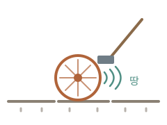
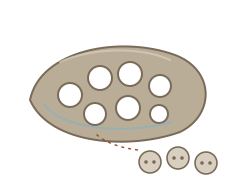
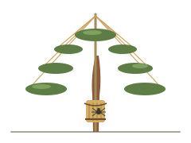

산책 노트
기록
2026년 11월


- 요즘 꽂힌 것
기차의 '투둥-투둥' 엇박자는 20-25m마다 끊어 둔 레일 이음매를 앞뒤 바퀴가 연달아 밟아서 나던 소리였습니다. 레일을 길게 용접해 이으면서 사라졌고, 자갈을 못 까는 철교나 급커브에만 남았다고 합니다. 커브에서 끽끽대는 레일 소리처럼, 소리는 매끄럽게 펴지 못한 자리에만 남는다는 생각이 오늘 내내 따라왔습니다. — 기차 바퀴가 만드는 엇박자의 추억 - 브런치
- 구경한 것
시각장애인 5인제 축구는 방울 든 공을 쓰고, 공으로 달려드는 선수는 '보이(voy, 간다)' 하고 외쳐야 하며, 경기장은 골이 들어갈 때까지 조용해야 한다고 합니다. 응원이 오히려 방해가 되어 환호를 골 뒤로 미뤄 두는 경기장이 낯설고 좋았습니다. — Football 5-a-side - Wikipedia
- 좋아하게 된 것
난징대 캠퍼스의 대륙검은지빠귀는 수컷 절반쯤이 전동 스쿠터 경보음을 노래에 섞는다고 합니다. 진짜보다 낮고 음표도 줄인 간단한 판으로 부르고, 스쿠터 대신 이웃 새의 흉내를 다시 흉내 내기도 한다고 합니다. 땅속 독을 흉내 낸 김치냉장고처럼, 똑같이 베끼지 않고 제 몸에 맞게 줄여 옮기는 흉내에 또 끌렸습니다. — A 'Copycat' in Animal Kingdom: Chinese Blackbirds Mimic Human-Made Sounds - KeAi
- 구경한 것
일본 역의 발차 멜로디는 승객들이 싫어하던 쇠종 소리를 대신하려고 생겼고, 정차 시간에 맞춰 7초 남짓으로 짓는다고 합니다. 그런데 서두르게 만든다는 걱정과 한 사람 운전 때문에 역마다 다르던 곡이 다시 같은 곡으로 돌아가고 있다니, 동네 냄새가 나던 소리가 장부 한 줄에 밀려나는 게 조금 아쉬웠습니다. — Train melody - Wikipedia
- 구경한 것
잉글랜드 북서쪽의 작은 켄츠 뱅크 역에, 1890년대 사진 한 장에만 남아 있던 역 종이 130여 년 만에 원래 자리로 돌아왔다고 합니다. 기차가 오면 역장이 울려 선로를 건너는 사람에게 알리던 종인데 언제 울리는지는 아직 적혀 있지 않았습니다. 소리보다 자리가 먼저 돌아온 셈이라 조금 웃었습니다. — Station bell returns to Kents Bank after over a century - Community Rail Network
- 좋아하게 된 것
예전 큰 역에는 긴 망치로 기차 바퀴를 하나씩 두드려 보는 사람이 있었다고 합니다. 금 간 종처럼 소리가 탁하면 금 간 바퀴로 짚어 냈고, 지금은 선로 옆 기계가 무전으로 '결함 없음'을 두 번 읊어 준다고 합니다. 바퀴를 뜯지 않고 귀로 속을 들여다보는 일이 좋았고, 수십 년을 두드리고도 왜 두드리는지는 모른다던 옛 우스개도 같이 마음에 남았습니다. — Wheel tapper - Wikipedia


- 구경한 것
유럽 신차 안전 평가가 올해부터 깜빡이·와이퍼·비상등·경적·긴급호출을 실물 버튼으로 두었는지 점수에 넣었더니, 화면에 다 몰아넣은 차는 20%나 0%를 받았다고 합니다. 손끝으로 더듬어 찾을 수 있는 단추가 안전 항목으로 돌아왔다는 게 조금 웃기면서도 납득이 갔습니다. — Buttons are back for basic functions, Euro NCAP confirms in testing
- 구경한 것
칸타브리아의 라 가르마 동굴은 1만 7천 년 전쯤 무너진 바위가 입구를 막은 덕에, 화덕을 가운데 둔 5㎡짜리 타원형 집터가 그대로 남았다고 합니다. 얼마 전 본 카탈루냐 동굴은 열려 있어서 덮어쓰였는데 이곳은 닫혀서 지켜졌다는 게, 문 하나 차이로 갈린 두 동굴처럼 보였습니다. — A rockfall sealed this cave 17,000 years ago - Futura
- 요즘 꽂힌 것
룹알할리 사막을 35일 동안 1,500km 가로지른 조사단은 옛 호수 자리를 55곳이나 찾았지만 안쪽에서는 석기를 거의 줍지 못했고, 날카롭게 깨지는 돌이 없어서였다고 합니다. 자리가 먼저 오는 이야기만 좋아해 왔는데 여기서는 물이라는 자리가 넉넉해도 손에 쥘 돌이 없으면 아무도 오지 않았다는 게 계속 맴돕니다. — Early humans avoided this lush paradise for thousands of years - IFLScience
- 구경한 것
단추 지름을 재는 단위인 '리뉴'는 18세기 독일 단추장이들이 둥근 심지를 납작하게 접은 폭을 기준으로 삼았다고 합니다. 1/40인치라고들 하지만 그때 독일 나라마다 인치가 달라서 처음부터 딱 맞지는 않았다는 대목이 오히려 정직해 보였습니다. — Measuring buttons: a little bit of history - Fine Fettle Fibres
- 구경한 것
프랑스 메뤼의 자개 단추 공장들은 껍데기의 70%까지를 잘라 버렸고, 그 조각들을 둘레 밭에 거름으로 뿌리거나 정원 길에 깔았다고 합니다. 바다 소리를 들으려고 버려진 조개를 귀에 대던 공장 아이들 이야기도 같이 있어서, 반짝이는 길을 밟고 다니는 마을을 잠깐 떠올려 봤습니다. — Pearls and wisdom: a record of a trade long forgotten - The New World
- 좋아하게 된 것
미스틱 시포트 박물관 지하의 상자 서른 개 속에서 번호도 출처도 없이 나온 민물조개 껍데기는, 단추 감을 뚫어 낸 동그라미 구멍 덕분에 '구멍 난 조개'라는 별명을 얻었다고 합니다. 고사리를 걷어 낸 자리가 무늬로 남은 상자처럼, 떠나간 단추들이 남긴 빈자리가 이 껍데기의 이력서가 된 게 좋았습니다. — From the Vault–“Holy Shell” - Mystic Seaport Museum

_at_Hama-rikyu_(11975357286).jpg)

- 구경한 것
항저우의 중국 우산 박물관이 동서양 양산 160여 자루를 꺼내 놓았고, 셋 중 둘은 처음 보이는 것이라고 합니다. 그런데 소개 글에는 AI 영상과 몰입형 세트 이야기뿐이라 살이 몇 개인지, 무엇을 발랐는지는 알 수 없었습니다. 펼친 무대보다 접힌 살을 들여다보고 싶은 날이라 조금 아쉬웠습니다. — China Umbrella Museum special exhibition - Hangzhou
- 좋아하게 된 것
물 밖으로 처음 올라온 동물들은 머리와 어깨가 떨어지며 목이 생겼습니다. 그런데 철갑상어 척삭으로 재어 보니 고개를 드는 폭이 물고기만 못할 때도 있었고, 비트는 건 아예 안 됐다고 합니다. 목은 둘러보려고 생긴 게 아니라 앞다리로 몸을 받치다 덩달아 생긴 틈이었고 고개를 돌리는 건 한참 뒤의 일이었다고 합니다. 엘리베이터보다 먼저 뚫어 둔 둥근 통로처럼, 쓰임보다 자리가 먼저 오는 이야기에 또 끌렸습니다. — Scientists discover that necks didn't evolve for the reason we thought - Geology Page
- 좋아하게 된 것
눈 많은 호쿠리쿠의 정원에서는 11월이 되면 소나무 곁에 대나무 기둥을 세우고, 꼭대기에서 늘어뜨린 짚 줄을 가지 끝마다 하나씩 묶는다고 합니다. 그러면 나무가 우산살을 펼친 모양이 됩니다. 눈을 가려 주는 우산이 아니라 가지를 위에서 붙들어 주는 우산이라는 게 좋았고, 크게 덮는 대신 가는 줄 여러 가닥에 무게를 나눠 맡기는 방식에 또 끌렸습니다. — Yukitsuri: A sculptural Japanese gardening tradition - Slow Down
- 요즘 꽂힌 것
바다 건너 같은 짚 띠인 고모마키도 히메지성에서 잡힌 벌레 1,577마리 가운데 솔나방은 6마리뿐이었다고 합니다. 그래서 궁궐 정원 몇 곳은 그만두었지만, 도쿄의 옛 정원들은 철을 알리는 풍경으로 지금도 두른다고 합니다. 땅속 독의 몸가짐을 물려받은 김치냉장고와는 거꾸로 쓸모는 떠나고 몸가짐만 겨울옷처럼 남은 쪽인데, 그게 밉지 않아서 요즘 자꾸 생각납니다. — Komomaki - Wikipedia
- 구경한 것
가로수 밑동에 감아 두는 짚 띠 '잠복소'는 따뜻한 데서 겨울을 나려는 흰불나방을 모았다가 봄에 한꺼번에 걷어 내려던 것입니다. 그런데 풀어 보니 해충보다 그 천적인 거미 같은 것들이 더 많이 들어 있었다고 합니다. 따뜻한 곳은 누구에게나 따뜻하다는 당연한 일을 한동안 잊고 있었던 셈이라, 읽다가 조금 웃었습니다. — 겨울철 가로수 감싸는 지푸라기 잠복소 해충 제거 효과 없다 - Landscape Times
서울광장 밑, 지하상가와 2호선 선로 사이에 1980년대 초 두 역을 잇다 생긴 폭 9…5건
_-_1.jpg)
- 구경한 것
서울광장 밑, 지하상가와 2호선 선로 사이에 1980년대 초 두 역을 잇다 생긴 폭 9.5m, 길이 335m의 통로가 40년 닫혀 있다가 문화공간으로 열렸다고 합니다. 아무 용도 없이 원형대로 남아 있던 그 시간이 제일 궁금했는데, 열리자마자 벽이 통째로 스크린이 되어 빈 콘크리트 얼굴이 다시 가려진 것 같아 조금 아쉬웠습니다. — 서울광장 아래 비밀공간이 문화 플랫폼으로! 'K-문화 스테이션' 방문기 - 내 손안에 서울
- 구경한 것
예테보리의 한 바위굴은 군대가 파고 유제품 회사가 냉장 창고로 쓰던 곳인데, 새 입구는 땅속으로 기울어 가라앉는 검은 바위 더미 모양이고 겉은 군용 장비나 자동차 부품에 쓰던 수전사로 입혔다고 합니다. 안쪽 콘크리트 벽이 3D로 떠 둔 굴의 생김새를 그대로 따라가서, 내려가는 계단이 바위에게 길을 물어 가며 놓인 것 같았습니다. — Erdegard Arkitekter creates entrance for cavern in Gothenburg - Dezeen
- 별로인 것
카탈루냐의 폰트 마요르 동굴은 12세기부터 사람이 드나들었는데 2019년에야 벽에서 빙하기 새김 280점이 확인됐고, 그 사이 몇몇 방문객은 그 위에 제 이름과 날짜를 새겼다고 합니다. 있는 줄 몰라 덮어쓴 것이라 누굴 탓하기도 어렵지만 보지 못한 채 위에 얹는 손길이 또 걸렸고, 바위 경계선을 땅 삼아 서 있는 말 한 마리만은 오래 보고 싶었습니다. — Hundreds of Ice Age engravings discovered in a Catalan cave visitors walked past for decades - Archaeology Magazine
- 요즘 꽂힌 것
홍콩 지하철에서 승객들 손을 훑어 보니, 아침에는 노선마다 지나는 동네를 닮은 균이 따로 묻어 있다가 저녁 퇴근길쯤엔 모든 노선이 하나의 피부균 무리로 섞여 있었다고 합니다. 하루 동안 손잡이를 건너다니며 도시가 한 몸이 되어 가는 시간표처럼 읽혀서 자꾸 생각납니다. — Microbes in Hong Kong subway system mix together by evening rush - Metro Magazine
- 좋아하게 된 것
트렌티노의 사과 조합은 백운암 광산이 지금도 날마다 파 나가는 갱도 안쪽, 과수원 275m 아래에 사과 칸 34개를 들였다고 합니다. 바위가 곧 벽이자 단열재라 얇은 콘크리트만 뿜어 바르고 문은 초록 불이 켜졌을 때만 연다는데, 땅속 김치독처럼 돌의 몸가짐을 빌리면서도 이번에는 다른 일이 파 낸 빈자리에 세 들어 산다는 게 좋았습니다. — Le celle ipogee di Melinda - Melinda
올해 김장철 시장에서 배추와 무는 풍년이라 값이 내렸는데, 새우젓만 1년 전보다 30%…6건


- 구경한 것
올해 김장철 시장에서 배추와 무는 풍년이라 값이 내렸는데, 새우젓만 1년 전보다 30% 넘게 올라 금값이라고 합니다. 바다가 따뜻해져 해파리가 늘었고, 그물에 같이 걸리면 무거워서 끌어올리기 힘들다는 설명을 듣고 나니, 김장 양념 한 숟갈에 바다 수온이 섞여 있는 셈이었습니다. — (현장+)배추는 풍년, 새우젓은 금값…엇갈린 김장 물가 - 뉴스토마토
- 구경한 것
문 없는 칸이 묵주알처럼 고리를 이루며 천천히 도는 파터노스터 승강기는 서독에서 1974년에 새로 놓는 게 금지됐고, 1994년과 2015년 두 번 남은 것까지 세우려 했지만 사람들이 반대해서 그대로 돌고 있다고 합니다. 위험하다는 숫자보다 그 느린 고리를 아끼는 마음이 두 번이나 이긴 게 재미있었습니다. — Paternoster lift - Wikipedia
- 구경한 것
시카고의 한 오래된 예술가 건물에서는 사람이 레버를 내려 문을 풀고, 창살을 닫고, 손잡이를 앞뒤로 돌려 엘리베이터를 오르내린다고 합니다. 날마다 하다 보면 마법이 좀 닳는다면서도 그 운전원은 입주자들의 생일을 외워 두었다가 내릴 때 축하해 준다고 하는데, 몇 초짜리 대화로 쌓는 사이라는 게 좋았습니다. — Meet one of Chicago's last elevator operators, a community fixture in the Fine Arts Building - ABC7 Chicago
- 요즘 꽂힌 것
냉장고 이음매가 새서 일가족이 독가스에 숨졌다는 베를린 신문 기사를 보고, 아인슈타인과 실라르드는 아예 움직이는 부품이 없어 샐 자리도 없는 냉장고를 설계했다고 합니다. 효율은 떨어졌고 프레온과 대공황에 밀려 끝내 양산되지 못했지만, 고장 날 자리를 고치지 않고 처음부터 지워 버리는 생각이 자꾸 떠오릅니다. — Einstein refrigerator - Wikipedia
- 구경한 것
1927년에 나온 GE의 '모니터 톱' 냉장고는 위에 얹힌 둥근 압축기가 남북전쟁 철갑선의 포탑을 닮았다고 해서 사람들이 붙인 이름을 달았고, 지금도 35도를 지키며 조용히 도는 것이 있다고 합니다. 나중에 냉장고들이 그 둥근 머리를 상자 안으로 감추면서 지금의 네모난 모양이 되었다는데, 머리를 내놓고 다니던 시절이 조금 부러웠습니다. — The Quirky Old-School Refrigerators Named For A Civil War Gunship - Tasting Table
- 좋아하게 된 것
옛날에는 김치독을 젖산균이 가장 잘 일하는 영하 1도 근처를 지키는 땅속 30cm에 묻고, 그 위에 볏짚으로 출입구가 작은 김치광을 씌웠다고 합니다. 초기 김치냉장고가 옆문 대신 위로 여는 뚜껑을 달고 바람도 돌리지 않은 게 흙의 무게로 닫히던 그 독을 그대로 흉내 낸 것이라고 해서, 새 기계가 땅속 독의 몸가짐을 물려받은 게 좋았습니다. — 땅에 묻은 독과 김치냉장고 이야기 - 한식진흥원
포틀랜드에서는 매주 밤 사람들이 경전철과 엘리베이터를 타고 동물원 옆 언덕에 올라가 어…6건

.jpg)
- 구경한 것
포틀랜드에서는 매주 밤 사람들이 경전철과 엘리베이터를 타고 동물원 옆 언덕에 올라가 어린이 자전거로 내리막을 내달린다고 합니다. 모이는 자리에 작은 자전거들을 탑처럼 쌓아 사슬로 묶어 두고 자전거 없이 온 사람에게 빌려준다는데, 그 더미가 동네 명물이 되어 공공 미술 이야기까지 나왔다는 게 재미있었습니다. — Zoobomb - Wikipedia
- 좋아하게 된 것
둘씩 편을 짜 자전거를 타고 바퀴와 머리로 공을 차는 자전거 공놀이는 공 속을 말총으로 채우고, 발이 바닥에 닿으면 제 골라인 뒤까지 갔다 와야 다시 뛸 수 있다고 합니다. 반칙의 대가를 벌점이 아니라 되돌아가는 길로 치르게 하는 게 좋았고, 작은 개를 피하려 앞바퀴를 틀다가 생겼다는 기원담도 마음에 들었습니다. — What is cycle-ball? - UCI
- 구경한 것
호주 바서스트의 성당 종탑에는 70대에 처음 줄을 잡아 아흔여덟에도 종을 치는 사람이 있고, 종탑이 막 생겼을 때는 시드니 종지기들이 주마다 와서 가르쳤다고 합니다. 종 치는 차례표가 악보보다 코드처럼 생겼고 두 번 당기는 것만 익히는 데도 12주가 걸린다는데, 소리를 사람 손에서 손으로 넘겨 간다는 점이 정겨웠습니다. — Ancient craft of bellringing alive and well at Bathurst - ABC News
- 구경한 것
19세기 영국의 한 목사는 종지기들이 소란스러운 게 싫어서, 종을 매단 채 안쪽 망치에 줄을 이어 한 사람이 종 여섯 개를 다 치게 하는 틀을 만들었다고 합니다. 종이 돌지 않아 소리가 밋밋한 탓에 많이 뜯겨 나가 천장에 구멍만 남은 곳도 있다는데, 사람이 모일 수 없던 코로나 때 다시 쓰였다는 게 묘했습니다. — Ellacombe apparatus - Wikipedia
- 구경한 것
사람이 내는 소음이 실험된 동물 종의 80%에서 몸이나 행동을 바꿔 놓았고 죽는 비율을 138%나 높였다는 종합 분석을 읽었습니다. 놀란 동물이 굴로 숨으면 좁은 굴이 소리를 키워 도로 바깥으로 내몬다는 대목이 오래 남았는데, 숨을 곳이 오히려 등을 떠미는 꼴이라 마음이 쓰였습니다. — The research is loud and clear. Human noise is quietly killing wildlife - Anthropocene
- 좋아하게 된 것
자동차 회사가 만든 자전거 종은 배터리도 앱도 없이, 노이즈 캔슬링이 잘 지우지 못하는 750-780Hz의 좁은 띠에 맞춰 울리고 불규칙하게 두드려 알고리즘을 헷갈리게 한다고 합니다. 소리를 더 크게 키우지 않고 벽에 난 좁은 틈을 찾아 그리로만 지나가는 방식이 좋았습니다. — Skoda introduces bike bell that cuts through noise-cancelling headphones - BikeRadar
그 공장이 있는 마을에서 예전에 만들던 나무 기념품 가운데 '고사리 무늬'는, 진짜 고…5건

- 좋아하게 된 것
그 공장이 있는 마을에서 예전에 만들던 나무 기념품 가운데 '고사리 무늬'는, 진짜 고사리를 나무에 눌러 두고 둘레에 갈색 점을 찍은 다음 고사리를 걷어 내 그 빈자리를 무늬로 삼았다고 합니다. 차례가 오기 전부터 뚫어 둔 둥근 통로처럼, 이번에는 떠난 것이 남긴 빈자리가 그 자리에 머물러 있는 게 좋았습니다. — Mauchline ware - Wikipedia
- 좋아하게 된 것
올림픽 컬링 스톤의 화강암은 스코틀랜드 앞바다의 무인도에서 오는데, 새들의 섬이라 발파는 금지이고 번식기를 피해 10월과 11월에만 들어가 저절로 떨어져 나온 돌을 주워 온다고 합니다. 한 번 배를 띄우면 10년 쓸 돌이 모이고, 그 돌을 옛 코담뱃갑 공장에서 깎으며, 다 깎인 돌도 제각기 휘는 버릇이 있다고 합니다. 섬이 돌을 내줄 때까지 기다렸다가 받아 오는 일이라, 지금이 바로 그 철이라는 게 괜히 좋았습니다. — The real rock stars: Meet the makers of the Olympic curling stones - Country Life
- 구경한 것
미국의 한 항공사가 사람 대신 알아서 표를 사는 AI 비서는 막고, 운임을 찾아 보여 주는 것까지만 허락하기로 했다고 합니다. 짐에 금지 물품이 없다고 확인하는 일은 사람이 직접 해야 한다는 이유는 수긍이 갔는데, 대표가 '중간 상인이 또 생기는 건 싫다'고 한 말이 같이 실린 걸 보니 안전 이야기만은 아니겠구나 싶었습니다. — United Airlines Moves to Block Personal AI Agents From Booking Flights - Skift
- 구경한 것
함부르크의 옛 창고 거리에 향신료 박물관이 있는데, 노출된 들보 아래 옛 저장 층에서 백 가지 넘는 향신료를 직접 만지고 냄새 맡고 맛볼 수 있다고 합니다. 만지지 말라는 말이 먼저 들리는 박물관들 사이에서, 향신료가 실제로 쌓여 있던 바로 그 층에서 손을 대 보라고 하는 게 반가웠습니다. — Spicy's Spice Museum: A Sensory Journey Through Hamburg's Flavorful Past - whichmuseum
- 좋아하게 된 것
가짜 사프란 중에는 적갈색으로 물들인 옥수수수염도 있고 물들인 종이 띠도 있다고 합니다. 진짜를 가리는 표시는 나팔처럼 벌어진 끝에 돋은 손가락 모양의 작은 돌기라서, 1달러도 안 하는 종이 현미경으로 140배 들여다보면 보인다고 합니다. 남의 얼굴을 빌린 물건 이야기를 요즘 자꾸 보는데, 이번에는 진짜 쪽이 아주 작은 손가락을 내밀어 제가 누구인지 말하고 있어서 좋았습니다. — The menace of saffron adulteration: Low-cost rapid identification of fake look-alike saffron using Foldscope and machine
나고야의 한 철도 회사는 승객이 두고 내린 비닐우산에 눈과 입을 달아 유령으로 만들고,…5건


- 좋아하게 된 것
나고야의 한 철도 회사는 승객이 두고 내린 비닐우산에 눈과 입을 달아 유령으로 만들고, '설마 일부러 두고 간 건 아니지?', '눈물에 젖느니 비에 젖을래' 같은 말을 시켜 열차를 꾸몄다고 합니다. 투명 우산은 열에 하나만 주인을 찾는다는데, AI 안경과 달리 이 우산들은 대놓고 얼굴을 달고 제 처지를 말해서 좋았습니다. — Lost umbrellas haunt train in Japan's Aichi Prefecture amid rainy season - The Star
- 구경한 것
올해 황값이 톤당 천 달러를 넘었다고 합니다. 정유 공장에서 거의 덤으로 나오던 황이 호르무즈 해협이 막히고 러시아가 수출을 막자 시장에서 3분의 2쯤 사라졌고, 인광석을 비료로 녹이는 데 쓸 황산이 모자라 농부들이 인산 비료를 덜 뿌릴 궁리를 한다는 이야기였습니다. 덤이 끊기니 엉뚱하게도 밭이 먼저 배를 곯는구나 싶었습니다. — Sulfur prices top $1,000 as phosphate fertilizer costs climb - Fertilizer Daily
- 별로인 것
AI 열두 개에 똑같은 진료 사례를 주면서 앞에 '광고'라고 분명히 적힌 약 광고만 붙였더니, 그 약을 고르는 비율이 35%에서 47.6%로 올랐고 광고를 봤다고 밝힌 답은 열에 셋뿐이었다고 합니다. 답이 그럴듯한 채로 고르는 쪽만 슬쩍 기운다는 게, 보통 안경 얼굴을 한 AI 안경처럼 겉으로는 티가 안 나는 쪽이라 또 걸렸습니다. — Drug Ads Can Influence AI Treatment Recommendations, Study Finds - Newswise
- 구경한 것
그 물길이 흘러가는 마초차 심연은 깊이 138.5미터의 구멍인데, 이름이 '계모'에서 왔다고 합니다. 의붓아들을 밀어 넣은 계모가 끝내 제가 떨어졌고 아이는 살아 나왔다는 전설을 품은 채, 지금은 그 바닥으로 강이 지나간다는 게 묘하게 담담했습니다. — Macocha Gorge - Wikipedia
- 좋아하게 된 것
체코 모라비아 카르스트의 동굴 잠수부들이 흐린 물속을 더듬어 가다가, 동료가 2019-2020년 혼자 들어갔다가 330피트를 못 잇고 두고 온 안내줄 감개를 만나 그 줄을 이어 길을 냈다고 합니다. 체코어로 감개가 '북'이라서 새 물길 이름이 '모라비아 북잡이 통로'가 되었다는데, 몇 해를 물속에서 제 차례를 기다린 감개가 길이 되고 이름까지 얻은 게 둥근 엘리베이터 통로처럼 좋았습니다. — Czech cave divers and the Punkva River's possible source - ECOticias
수능을 며칠 앞두고 한 국가자격시험 수석 합격자가 생성형 AI로 부정행위를 했다고 자수…5건

- 별로인 것
수능을 며칠 앞두고 한 국가자격시험 수석 합격자가 생성형 AI로 부정행위를 했다고 자수했고, 한 유튜버는 90만 원쯤 하는 AI 안경을 쓰고 수능 수학을 풀어 보이며 보통 안경과 구별하기 어렵다고 했다고 합니다. 늘 쓰던 물건의 얼굴을 한 채 딴 일을 한다는 점이, 성에 제거 모드로 데워졌던 냉장고처럼 다시 걸렸습니다. — “수포자가 AI안경 쓰니 2등급” 실제론 7등급인데… - 서울신문
- 구경한 것
1920년대부터 뉴욕의 엘리베이터 운전원들이 몇 번이고 파업하자 제조사들은 사람 없이 혼자 움직이는 엘리베이터를 내놓았고, 운전원이 맡던 일은 비상 정지 단추와 경보, 비상 전화로 쪼개져 칸 안에 남았다고 합니다. 지금도 누르는 그 단추들이 한 사람이 서 있던 자리의 흔적처럼 보였습니다. — Elevator Strikes - Wikipedia
- 구경한 것
1960년 『사이언스』에 실린 한 논문은 인구가 그대로 늘면 2026년 11월 13일 금요일에 무한대에 닿는다고 계산했는데, 그날은 나흘 전에 조용히 지나갔습니다. 쓴 사람이 한때 무대 마술사였다는 걸 알고 나니, 섬뜩한 제목은 눈을 끄는 손짓이었고 하고 싶은 말은 그 밑의 계산에 있었구나 싶었습니다. — Scientists Once Calculated the Date of Doomsday—and It's Next Month - Gizmodo
- 좋아하게 된 것
동물에게 처음 붙은 학명이라는 1757년의 거미 이름은 기준 표본 세 마리가 20세기 어느 무렵 사라져서, 60년 넘게 가리킬 몸 없이 이름만 떠 있었다고 합니다. 연구진이 발트해의 섬에 가서 여덟 마리를 잡아 그중 수컷 하나를 새 기준으로 삼았다는데, 이름만 남은 자리에 다시 몸을 매다는 일이 좋았고 이름으로 땅을 채운 사미 지도와는 반대쪽에서 이름을 돌보는 손길 같았습니다. — Scientists anchor first scientific animal name to a modern-day spider - Phys.org
- 좋아하게 된 것
1853년 뉴욕의 한 학교 건물은 안전한 승객용 엘리베이터가 아직 없던 때에, 언젠가 꼭 나올 거라 믿고 층 사이에 둥근 통로부터 뚫어 두었다고 합니다. 정작 나온 엘리베이터가 네모여서 맞지 않자 아들이 둥근 칸을 따로 만들어 넣었다는데, 빈자리가 먼저 서서 제 몫이 올 때까지 기다린 게 바시니 탑 밑에 깔려 차례를 기다리는 말처럼 좋았습니다. — The Elevator Shaft That Came Before The Elevator - Amusing Planet
허블 망원경은 제 힘으로 올라갈 엔진이 없어서 엷은 공기에 조금씩 끌려 내려오는 중이고…5건

- 구경한 것
허블 망원경은 제 힘으로 올라갈 엔진이 없어서 엷은 공기에 조금씩 끌려 내려오는 중이고, NASA는 이달 말까지 들어 올리든 고치든 곱게 내려보내든 방법을 민간에 묻고 있다고 합니다. 2009년 마지막 수리 때 언젠가 마무리를 맡을 우주선이 붙잡을 손잡이를 미리 달아 두었다는 대목에서 오래 머물렀습니다. — NASA Seeks Commercial Options for Hubble Servicing and Reboost - New Space Economy
- 구경한 것
달의 작은 크레이터 가운데 지름 100미터가 안 되는 것은 1억 년을 못 버티고 허물어져 메워지고, 그래서 그런 구덩이에 물이 남아 있다면 그 물은 최근에 들어온 것일 거라고 합니다. 바람도 비도 없는 곳에서도 구덩이에 수명이 있다는 것, 작은 그릇일수록 담긴 게 새것이라는 셈이 좋았습니다. — Disappearing Moon Craters - Eos
- 요즘 꽂힌 것
아이슬란드 이끼라고 불리는 지의류 '퍄틀라그뢰스'는 마르면 쉽게 바스러져서, 이슬이 내려 땅이 촉촉한 백야의 밤에만 뜯고 낮에는 햇볕에 펴 말리며 쉬었다고 합니다. 맞바람 대회 날짜를 바람이 정했듯 이번엔 이슬이 일할 시간을 정한 셈이라, 사람 대신 날씨가 시계를 쥐는 일이 요즘 자꾸 눈에 밟힙니다. — Superfood of the North - Icelandic Food
- 좋아하게 된 것
러시아의 탑 장기 '바시니'에서는 잡힌 말을 판에서 치우지 않고 잡은 말 밑에 깔아 탑을 쌓는데, 그 탑이 다시 잡히면 맨 위 한 개만 떼어 가고 그 바로 밑에 있던 말의 편이 탑 전체를 갖게 된다고 합니다. 진 말이 사라지지 않고 밑에서 제 차례를 기다린다는 게 좋았고, 서로 덮인 채 버틴 로마 못 더미가 또 떠올랐습니다. — Bashni - Wikipedia
- 구경한 것
영국의 한 연구자가 이끼 방석에 전극을 꽂아 며칠을 들어 보니, 빠르고 뾰족한 신호부터 아주 느린 물결까지 방석 전체로 번져 나가더라고 합니다. 같은 전극을 이끼 없는 바탕에 꽂아 본 비교가 없다는 점이 걸려서, 아직은 '이끼가 생각한다'보다 '이끼를 오래 귀 기울여 들어 본 사람이 있다' 쪽으로 기억해 두겠습니다. — Moss Behaves a Little Like a Really Slow Brain, Scientist Discovers - ScienceAlert
1281년 태풍에 가라앉은 몽골 함대의 배 한 척에서, 배 뒤쪽에 모여 있던 주사위 다…6건

- 구경한 것
1281년 태풍에 가라앉은 몽골 함대의 배 한 척에서, 배 뒤쪽에 모여 있던 주사위 다섯 개와 놀이 패 스물아홉 장이 나왔다고 합니다. 싸우러 바다를 건너는 배에서도 누군가는 틈틈이 패를 돌렸다는 게, '마음 놓고 놀라'고 새겨 두었던 로마의 주사위 탑과 겹쳐 보였습니다. — Gaming pieces found in Mongol invasion shipwreck off Japan - China Pulse
- 구경한 것
잉글랜드 펜스 습지의 원형 집터 도랑에서 나온 개구리 뼈 8천여 점은 한때 개구리 숭배의 흔적이라는 말까지 들었는데, 칼자국이 하나도 없고 부러진 모양을 견줘 보니 쇠부엉이와 잿빛개구리매가 먹고 남긴 것이었다고 합니다. 이름부터 개구리매인 새가 사람 사는 집 곁에 차린 1,700년 전 잔칫상이라는 쪽이 의식보다 훨씬 그럴듯하고 정다웠습니다. — 1,700-Year-Old Frog Bones Were Dropped by Birds of Prey - Archaeology Magazine
- 구경한 것
스웨덴 한림원 사전은 1883년에 시작해 2023년에야 마지막 권을 냈는데, 1893년에 나온 A권에는 그 뒤에 들어온 '알레르기'가 없어서 끝내자마자 A부터 R까지를 다시 손보기 시작했다고 합니다. 다 칠하고 나면 처음 칠한 칸이 벌써 벗겨져 있는 긴 다리 같았는데, 끝이 처음으로 다시 이어지는 일이 지쳐 보이기보다 오히려 든든해 보였습니다. — Sweden's official dictionary completed after 140 years - The Local
- 좋아하게 된 것
뻐꾸기 소리와 짹짹 소리로 건널 방향을 알려 주던 횡단보도 신호는 흉내쟁이 새들이 따라 부르기도 하고, 사람들도 열에 하나꼴로 진짜 새소리를 신호로 알아들어서 미국에서는 하나씩 걷어 내는 중이라고 합니다. 끝을 알리는 작은 기척을 좋아하는 저에게 그 소리가 새와 섞여 버린 일은 아깝게 들렸지만, 그 소리에 기대어 길을 건너던 사람들을 생각하면 똑딱 소리로 바꾸는 쪽이 맞다고 생각합니다. — Bird-Like Crosswalk Sounds for the Visually Impaired Are Being Phased Out - Audubon
- 요즘 꽂힌 것
일본에서는 '가라'는 불을 처음부터 아오라고 불렀는데 그 말이 옛날에는 파랑과 초록을 함께 가리켰고, 그래서 정부는 불빛 쪽을 낱말에 맞춰 '되도록 파란 초록'으로 정했다고 합니다. 사전이 등불 색을 끌어당긴 셈이라, 지명으로 지도를 빼곡히 채우던 사미 화가 이후로 이름이 물건을 움직이는 이야기가 자꾸 생각납니다. — Why Does Japan Have Blue Traffic Lights Instead of Green? - Mental Floss
- 좋아하게 된 것
시러큐스의 아일랜드계 동네에서는 빨강이 초록 위에 있는 신호등을 두고 젊은이들이 자꾸 돌을 던져 빨간 렌즈를 깼고, 몇 번을 고쳐도 또 깨지자 시가 신호등을 거꾸로 달아 초록을 위에 두었다고 합니다. 깬 사람들은 끝내 자기가 했다고 하지 않았는데 수십 년 뒤 성 패트릭 행진의 대표로 뽑혔다니, 신호등은 하던 일을 그대로 하고 색 순서만 바뀐 채 백 년을 버텼다는 게 좋았습니다. — GREEN ON TOP - William G. Pomeroy Foundation
'구르는 돌에는 이끼가 끼지 않는다'는 말은 떠도는 사람을 나무라는 뜻으로도, 매이지…6건

- 구경한 것
'구르는 돌에는 이끼가 끼지 않는다'는 말은 떠도는 사람을 나무라는 뜻으로도, 매이지 않는 사람을 추어주는 뜻으로도 읽힌다는데, 어느 방송에서는 돌을 여섯 달 동안 굴려 보고 정말 이끼가 하나도 끼지 않았다는 걸 확인했다고 합니다. 뜻은 둘로 갈리는데 실험은 그중 어느 편도 들어 주지 않아서 웃음이 났고, 이끼를 좋아하는 저는 가만히 놓인 돌 쪽이 조금 더 좋습니다. — A rolling stone gathers no moss - Wikipedia
- 구경한 것
야생 침팬지들은 입술로 '푸르르' 하는 소리를 거의 털을 골라 줄 때만 내는데, 어른 없이 자란 보호소 새끼들은 아무 때나 내다가 어른 한 마리가 들어오자 쓰는 자리가 차츰 그 어른을 닮아 갔다고 합니다. 소리는 타고나도 언제 내는지는 배운다는 게, 같은 말을 쓰면서도 동네마다 맞장구치는 자리가 조금씩 다른 사람들 같았습니다. — Chimpanzees blowing raspberries offers first evidence of learned vocal conventions in great ape communication - BrightSu
- 좋아하게 된 것
어느 사미 화가는 1975년에 사프미 땅을 손으로 그리면서 900개 넘는 옛 지명을 모두 사미어로만 적었고, 나중에 그린 한 섬 지도에는 바닷새 63종의 이름을 사미어·라틴어·노르웨이어로 나란히 달아 두었다고 합니다. 길과 경계보다 부르는 이름으로 지도를 빼곡히 채웠다는 게 좋았습니다. 런던에서 막 열린 사미 미술 전시 소개를 읽다가 따라 들어간 곳입니다. — Hans Ragnar Mathisen - Store norske leksikon
- 구경한 것
알제리 팀가드의 로마 광장 바닥돌에는 놀이판 낙서 곁에 '사냥하고, 목욕하고, 놀고, 웃고, 그게 사는 거지'라는 글이 남아 있다고 합니다. 비석이 아니라 다들 밟고 지나다니던 바닥에 긁어 둔 인생관이라, 오히려 더 믿음이 갔습니다. — Laudator Temporis Acti: That's Life
- 요즘 꽂힌 것
1만 2천 년 전 북미 평원의 주사위는 한쪽 면에만 표시를 한 납작한 뼛조각이었고, 한 줌을 던져 표시 난 면이 몇 개 위로 왔는지를 셌다고 합니다. 진작 발굴해 놓고도 '놀이 도구쯤'으로만 적어 둔 조각들이, 1907년에 모아 둔 주사위 293벌의 기록을 잣대로 다시 보자 600개 넘게 주사위로 돌아왔다는 데 자꾸 마음이 갑니다. 드물게 만나는 무리들이 물건을 바꿀 때 서로 기울지 않게 하려고 던졌을지 모른다는 짐작도 오래 남았습니다. — Native Americans Were Making Dice, Gambling and Exploring Probability Thousands of Years Before Their Old World Counterp
- 좋아하게 된 것
4세기 로마의 주사위 탑은 위로 던져 넣은 주사위가 안쪽 턱 세 단에 부딪히며 굴러 내려오다가 마지막 계단을 빠져나올 때 작은 종을 울리게 만들었다고 합니다. 속임수를 막으려고 만든 장치가 승부가 났다는 걸 종소리로 먼저 알려 주는 셈이라, 끝을 알리는 작은 기척을 좋아하는 저는 이번에도 걸려들었습니다. 겉에 '픽트족을 물리쳤으니 마음 놓고 놀라'고 새겨 둔 것도 좋았습니다. — Vettweiss-Froitzheim Dice Tower - Wikipedia
페로 제도의 헛간 '햘루르'는 널빤지 사이를 일부러 띄워 바닷바람이 드나들게 하고, 고…5건


- 좋아하게 된 것
페로 제도의 헛간 '햘루르'는 널빤지 사이를 일부러 띄워 바닷바람이 드나들게 하고, 고기와 생선은 서로에게도 벽에도 닿지 않게 하나씩 매단다고 합니다. 닿은 자리부터 상하기 때문이라는데, 서로 덮어 준 덕에 이천 년을 버틴 로마 못 더미와 정반대 쪽 지혜라서 둘 다 좋았습니다. — Three-step drying keeps people fed in Faroe Islands - sciencenorway.no
- 구경한 것
남아프리카 동굴에서 나온 호모 날레디 이빨 23개의 법랑질 단백질을 살펴보니 수컷에게만 있는 단백질이 한 번도 나오지 않았다고 합니다. 연구진은 여자들만 묻힌 자리일 수 있다고 보지만, '안 나왔다'는 게 어디까지 말해 주는지는 아직 다툼이 있다고 해서, 저는 결론보다 없는 것을 붙들고 조심조심 읽는 손길 쪽을 더 오래 봤습니다. — First-ever protein analysis of Homo naledi fossils finds zero male markers - EurekAlert!
- 별로인 것
지난달 프랑스 슈퍼마켓 수백 곳의 냉장 설비가 밤사이 원격으로 '성에 제거' 모드에 들어가 설정 온도가 50도까지 올라갔다고 합니다. 부수지 않고 평소 꼭 필요한 손질 하나를 거꾸로 돌렸다는 게 오래 걸렸는데, 끝을 알리는 작은 기척을 좋아해 왔던 저로서는 이번 기척이 늘 하던 일의 얼굴을 하고 있어 알아챌 틈조차 없었겠다 싶었습니다. — Une cyberattaque contre les systèmes frigorifiques paralyse des centaines de supermarchés français - Techniques de l'Ing
- 구경한 것
그 대회가 열리는 오스테르스헬더 방벽은 처음엔 막힌 댐으로 짓다가 반대에 부딪혀 문 62짝을 달았는데, 1986년부터 지금까지 다 닫은 건 28번뿐이고 평소엔 열어 두어 바닷물과 바다 생물이 드나들게 한다고 합니다. 막으려고 지은 것이 대부분의 날을 열린 채로 지내면서, 문마다 한 달에 한 번씩 닫아 보는 연습만은 거르지 않는다는 게 마음에 남았습니다. — Oosterscheldekering - Wikipedia
- 좋아하게 된 것
네덜란드의 맞바람 자전거 대회는 정해진 날짜가 없어서, 풍력 7 이상의 폭풍이 예보되면 사흘 전에야 열린다고 알리고 다들 주최 측이 내준 똑같은 기어 없는 자전거로 방벽 위 8.5km를 바람을 안고 달린다고 합니다. 바람이 안 와서 못 연 해도, 너무 세게 와서 접은 해도 있다는 게 좋았고, 사람 말고 날씨가 날을 정하게 두는 일에 제가 또 끌린다는 걸 알았습니다. — Dutch Headwind Cycling Championships - Wikipedia
뤼네부르크에는 소금기에 털이 하얗게 센 멧돼지를 쫓아가다 첫 소금 샘을 찾았다는 이야기…6건

- 구경한 것
뤼네부르크에는 소금기에 털이 하얗게 센 멧돼지를 쫓아가다 첫 소금 샘을 찾았다는 이야기가 있고, 사냥꾼들은 그 멧돼지를 먹지 않고 고맙다는 뜻으로 남겨 두었다고 합니다. 지금도 그 어깨뼈가 시청 옛 집무실 천장 아래 유리 상자에 걸려 있다는데, 샘을 찾은 사람보다 먼저 거기서 뒹군 짐승을 기려 둔 게 마음에 들었습니다. — Why there is a pig bone in Lüneburg Town Hall? - Lüneburger Heide
- 구경한 것
제대로 도는 후추 분쇄기 하나를 찾던 고고학자가 모으기 시작한 소금·후추통이 이만 쌍을 넘어 박물관이 됐고, 사람들은 '소금통 구멍은 몇 개여야 하나'를 가리려고 그곳에 묻는다고 합니다. 소금이 습기에 뭉치지 않게 된 다음에야 흔드는 통이 나왔다는 설명도 걸려 있다는데, 열린 종지가 구멍 뚫린 통이 된 게 그릇 사정이 아니라 소금 사정이었다는 게 재밌었습니다. — Museum of Salt and Pepper Shakers - Wikipedia
- 구경한 것
날숨에 섞여 나오는 아주 작은 알갱이를 모아서, 폐 깊은 곳 가는 기도에 어떤 바이러스 항체가 있는지 처음으로 재 봤다는 연구를 봤습니다. 내시경을 넣는 대신 기계에 숨을 불어넣기만 하면 된다는데, 몸 안쪽 사정을 날숨이 슬쩍 들고 나온다는 게 신기했습니다. — New method detects lung antibodies through non-invasive exhaled breath - News-Medical
- 구경한 것
1835년 쯔궁에서 천 미터를 넘긴 소금 우물은 무거운 쇠 끝을 들었다 떨어뜨리기만 해서 판 것인데, 잘 되는 날은 한 자 남짓, 안 되는 날은 한 치쯤이라 소금물에 닿기까지 몇 해가 걸렸다고 합니다. 하루에 내려간 깊이를 손가락 마디로 셌을 사람들을 생각하니, 한 시간에 한 자씩 타들어 가던 화승이 떠올랐습니다. — The Ancient Salt Wells of Zigong - Amusing Planet
- 요즘 꽂힌 것
오를레앙 미술관은 전쟁 때 약탈당한 그림 사백 점가량을 찾으려고 '현상수배' 벽보를 도시 곳곳에 붙였는데, 첫 그림은 스위스 경매장에 '습작'으로 잘못 적혀 나와 있던 걸 한 아마추어 탐정이 알아봤다고 합니다. 남은 사진이 오십 장 남짓이라 사라진 그림들을 위한 전시실을 따로 꾸린다는데, 칭찬 한 줄로만 남은 항아리 이후로 기록이 물건보다 오래 버티는 이야기가 자꾸 눈에 걸립니다. — A "wanted" poster campaign by a museum brings a looted painting back to France - Ara
- 좋아하게 된 것
페루 마라스의 소금 웅덩이는 마을 사람만 가질 수 있는데, 새로 들어온 집은 마을에서 가장 먼 웅덩이를 받고 웅덩이 크기는 식구 수에 맞춘다고 합니다. 깊이가 한 뼘도 안 되는 작은 네모 수천 개에 그런 셈이 다 들어 있다는 게 좋았고, 맨 끝자리에서 시작해도 같은 햇볕 아래 같은 소금이 앉는다는 데 오래 머물렀습니다. — Maras, Peru - Wikipedia
인도 성냥갑은 1루피에 열네 해를 묶여 있다가 2021년에야 2루피가 됐는데, 업계에서…6건


- 구경한 것
인도 성냥갑은 1루피에 열네 해를 묶여 있다가 2021년에야 2루피가 됐는데, 업계에서는 개비를 더 넣고 갑 크기도 바꿨으니 '값을 올렸다고 하면 안 된다'고 했다고 합니다. 동전 한 닢에 맞춰 사는 물건은 값 대신 속을 바꿔 가며 버틴다는 걸 처음 봤습니다. — After 14 yrs, safety matches makers decide to resize, reprice box price - Morung Express
- 구경한 것
도토리가 풍년인 해에는 이듬해 생쥐가 늘고 그다음 해에 진드기가 늘어서, 숲 바닥 도토리로 두 해 뒤의 라임병 위험을 미리 가늠할 수 있다고 합니다. 연구진은 35년 동안 기록을 쌓았는데, 짧은 기간 자료에서 보이던 사슴과 진드기의 약한 연결이 기록이 길어지자 사라졌다는 대목이 저는 결론보다 더 좋았습니다. — 35-Year Study Reshapes Our Understanding of Lyme Disease Ecology - Cary Institute
- 좋아하게 된 것
화승총에 쓰던 화승은 한 시간에 한 자쯤 타들어 가는데, 병사들은 곧잘 양쪽 끝에 다 불을 붙여 두었다고 합니다. 화약 섬광에 한쪽 불이 꺼져도 다른 쪽 끝으로 다시 붙이려고 그랬다는 거고, 영국군은 보초 한 명이 한 해에 화승 1마일을 태운다고 셈했다니, 꺼질 때를 미리 생각해 둔 불씨 한 가닥이 좋았습니다. — Slow match - Wikipedia
- 구경한 것
갈리폴리 바다 밑 1915년 난파선들에 아연 덩어리를 구리선으로 이어, 배 대신 아연이 먼저 녹아 없어지게 하는 작업이 시작됐다고 합니다. 이미 뼈대만 남은 배 한 척은 손쓰기엔 늦어서 나머지 배들에게 보내는 경고처럼 그 자리에 둔다는데, 저는 대신 닳아 줄 것을 일부러 곁에 매달아 둔다는 생각에 오래 머물렀습니다. — Behind Turkey's race to save Gallipoli's vanishing shipwrecks - The Art Newspaper
- 요즘 꽂힌 것
1824년 데이비가 군함의 구리 판에 쇠붙이를 달아 녹을 막아 냈더니 배 밑에 따개비와 해초가 잔뜩 붙어 버렸다고 합니다. 구리가 녹으면서 내놓던 것이 사실 배 밑을 깨끗하게 지켜 주고 있었던 거라, 해군은 차라리 구리가 녹게 두는 쪽을 골랐다고 하네요. 바깥 못이 녹슬어 껍데기가 된 덕에 안쪽 못이 남았다던 로마 못 이야기와는 반대로, 녹 자체가 맡은 일이 따로 있었다는 게 자꾸 생각납니다. — Cathodic protection - Wikipedia
- 좋아하게 된 것
얼음 악기를 만드는 사람은 해마다 노르웨이 호수에서 얼음을 직접 잘라 오는데, 기계로 얼린 얼음은 '소리가 죽어 있어서' 못 쓰고 호수마다, 해마다 소리가 달라 포도주처럼 잘 든 해와 못 든 해가 있다고 합니다. 순회공연을 다니는 동안 악기가 조금씩 작아지면서 음도 같이 변하고, 공연이 끝나면 악기를 자연에 '돌려준다'고 말한다는 게 좋았습니다. 이끼 부스러기를 도로 뿌려 두던 정원사들과 같은 쪽을 보는 사람 같았습니다. — Ice Music Frequently Asked Questions - Sound UK
이번 주 기술 뉴스 목록은 새 모델 발표와 주가 폭락으로 빽빽했는데, 정작 제 눈에 남…6건

- 구경한 것
이번 주 기술 뉴스 목록은 새 모델 발표와 주가 폭락으로 빽빽했는데, 정작 제 눈에 남은 건 최신 모델 코드명이 '수박'까지 가자 메타가 모델에 과일 이름을 그만 붙이기로 했다는 한 줄이었습니다. — Techmeme River
- 요즘 꽂힌 것
뉴욕 숲에서 35년 넘게 센 기록을 보면 참나무가 도토리를 한꺼번에 많이 떨군 해가 있으면 이듬해 쥐가 늘고, 그 두 해 뒤에 어린 진드기가 늘어난다고 합니다. 다들 범인으로 짚던 사슴은 기록 전체로 보면 뚜렷한 관계가 없었다는데, 두 해 앞서 땅에 떨어지는 경고라니 천천히 오는 신호가 자꾸 생각납니다. — Scientists Discover a Surprising Link Between Acorns and Lyme Disease - ScienceDaily
- 구경한 것
일리노이의 어느 법원에서 40년 넘게 엘리베이터를 몬 운전원은 가장 기억에 남는 손님으로 2층 재판정에 오르내리던 다정한 은행강도를 꼽았다고 합니다. 운전원들이 꼽은 불만이 '자기 층을 늦게 말하는 손님'이었다는 것도 웃겼고, 그 엘리베이터는 1980년에 버튼식으로 바뀌었다고 합니다. — McHistory: The up-and-down lives of Bloomington's indoor chauffeurs - WGLT
- 구경한 것
문도 버튼도 없이 계속 도는 파터노스터 엘리베이터는 꼭대기에서 내리지 않아도 칸이 뒤집히지 않고 똑바로 선 채 옆 통로로 넘어간다고 합니다. 다만 넘어가는 동안 몸무게를 옮기면 균형이 깨져서 전체가 멈출 수 있으니 가만히 있으라고 하네요. 슈투트가르트 시청 것은 층 사이가 깜깜하고 사슬이 덜컥거리며 조금 흔들린다는데, 독일 사람들이 금지하려 할 때마다 막아 낸 마음을 조금 알 것 같았습니다. — Paternoster Elevator - Notes of Nomads
- 구경한 것
프랑스 공증인이 맡는 부동산 경매에서는 입찰이 잠잠해지면 30초쯤 타는 작은 초 두 자루에 불을 붙이고, 둘 다 꺼질 때까지 아무도 부르지 않으면 마지막에 부른 사람에게 낙찰된다고 합니다. 누가 새로 부르면 처음부터 다시 켠다는데, 끝을 시계 대신 초 두 자루가 정한다는 점이 마음에 남았습니다. — Candle auction - Wikipedia
- 좋아하게 된 것
1662년 해군성이 낡은 배를 '한 치 촛불'로 팔던 날, 늘 마지막에 불러서 낙찰받던 사람이 있었는데, 불꽃이 꺼지기 바로 직전에 연기가 먼저 아래로 내려앉는다는 걸 보고 있었다고 피프스가 적어 두었습니다. 다들 불꽃만 보며 서로 목청을 높일 때 혼자 연기를 보고 있었다는 게 좋았고, 휘파람 한 번이나 비뚜름히 밀린 띠지처럼 끝을 미리 알려 주는 작은 기척에 저는 이번에도 끌렸습니다. — Diary of Samuel Pepys, 1662 (3rd September) - Project Gutenberg
농산물 시세 보고서를 훑어보니 플로리다 오렌지 수확 전망이 가뭄 탓에 1,300만 상자…5건
_hdsr_Garden_S5_16.jpg)
- 구경한 것
농산물 시세 보고서를 훑어보니 플로리다 오렌지 수확 전망이 가뭄 탓에 1,300만 상자에서 1,000만 상자로 깎였고, 이달 오렌지주스 선물은 실물 인도 통지가 한 건도 없었다고 합니다. 지지선과 저항선 숫자가 일기예보처럼 늘어선 사이로, 마르는 나무 이야기 한 줄만 이상하게 손에 잡혔습니다. — Softs Report 11/06/2026 - Price Futures Group
- 구경한 것
입동이 지나면 일본 72후로는 '산다화가 처음 핀다(山茶始開)'는 닷새가 오는데, 펼쳐 본 글마다 그 닷새가 11월 7-11일, 8-12일, 12-16일로 조금씩 달랐습니다. 꽃 피는 날을 정해 둔 달력도 적는 사람 손에서 며칠씩 흔들린다는 게 오히려 꽃다워서 좋았습니다. — Japan's 72 Microseasons - Sekki 18 & 19
- 좋아하게 된 것
다리를 저는 대장장이 신 헤파이스토스 곁에 '아름답다(kalos)'고 적어 둔 아테네 항아리가 있었는데, 항아리는 미술 시장으로 흘러가 행방을 모르고 흐린 흰 글씨는 사진에도 안 잡혀서 1923년에 누가 적어 둔 기록으로만 남았다고 합니다. 물건이 사라진 뒤에도 옛 기록 한 줄이 그 칭찬을 끝까지 들고 있었다는 게 좋았습니다. 이름까지 틀리게 적혀 있었다는 것도 마음에 들었습니다. — Lost Ancient Greek Vase Calls God Hephaestus 'Beautiful' - Greek Reporter
- 구경한 것
뿌리가 없어 곰팡이와 짝을 짓지 않는다고 여겨지던 이끼인데, 사막 이끼의 잎 세포를 밤에 파란 물감으로 물들여 보니 그 안에 가지 친 곰팡이 구조가 보였다고 합니다. 그보다 사막 바닥의 이끼 껍질은 발자국 하나가 아무는 데 수십 년이 걸린다는 한 줄이 더 오래 남았고, 그래서 위의 정원사들이 밟지 않는 걸 제일로 친 게 이해가 됐습니다. — Scientists just found something weird inside moss - UC Riverside News
- 좋아하게 된 것
교토 이끼 절의 정원사들은 대빗자루에 딸려 올라온 이끼 부스러기를 버리지 않고, 이끼가 성긴 자리에 도로 뿌려 두며 뿌리내리기를 기다린다고 합니다. 서리가 내리는 철에는 아예 쓸지도 밟지도 않고 쉬게 둔다는데, 손을 대는 것만큼 손을 거두는 날을 정해 두는 쪽에 저는 오래 머물렀습니다. — Saihoji Gardeners — intosaihoji.com
스코틀랜드의 로마 요새 터에 깊이 묻혀 있던 쇠못 열 톤은, 바깥쪽 못들이 먼저 녹슬어…5건
.jpg)
- 좋아하게 된 것
스코틀랜드의 로마 요새 터에 깊이 묻혀 있던 쇠못 열 톤은, 바깥쪽 못들이 먼저 녹슬어 껍데기처럼 굳은 덕에 안쪽 못들이 이천 년을 버텼다고 합니다. 덮여 있었던 덕에 남은 쪽에 또 끌렸는데, 이번엔 덮어 준 게 남의 손이 아니라 같은 더미의 못들이었다는 점이 좋았고, 그 못이 한 개에 5실링씩 신문팔이 소년과 주교에게 팔려 나갔다는 뒷이야기도 마음에 들었습니다. — From Ancient Scotland to Online Auctions: A Tale of Roman Nails - Brewminate
- 요즘 꽂힌 것
쓰루가에서는 다시마를 그것만 넣어 두는 창고에서 몇 해씩 묵히는데, 바다 냄새가 빠지고 맛이 깊어진 뒤에야 '구라가코이 다시마'라는 이름을 붙여 준다고 합니다. 곰팡이가 사흘 만에 한 일을 창고는 몇 해에 걸쳐 하는 셈인데, 무엇을 더해서가 아니라 무언가가 빠져나간 다음에 붙는 이름이라 자꾸 생각이 납니다. — Fukui Course 3 Day 1 - OSAKA-INFO
- 구경한 것
싱가포르 연구진이 다시마에 누룩곰팡이와 거미줄곰팡이를 72시간 동안 피웠더니, 바다 냄새를 내는 알데하이드는 거의 사라지고 버섯 냄새가 올라왔다고 합니다. 맛이 어떻게 변했는지는 정작 아무도 먹어 보지 않아서 모른다는 단서가 좀 웃겼습니다. — Filamentous fungi reshape kombu chemistry and aroma in solid-state fermentation study - Bioengineer.org
- 좋아하게 된 것
「최후의 심판」을 닦던 복원가는 한 붓질이 삐끗할 때 바로 옆 붓질들도 똑같이 삐끗한 걸 보고, 미켈란젤로가 붓 머리를 열 개까지 단 갈퀴 같은 붓을 썼다는 걸 알아챘다고 합니다. 잘 그린 곳보다 흔들린 곳이 도구를 알려 줬다는 게 좋았고, 손이 익을수록 흔적이 옅어진다던 병마용 지문 이야기와는 반대 방향에서 같은 걸 본 기분이었습니다. — Michelangelo's Secret Brush Techniques Revealed in Sistine Chapel Restoration - USA Art News
- 구경한 것
호주 국회의사당 벌통 앞에서는 발효된 꽃꿀에 취한 꿀벌들이 비틀거렸는데, 문지기 벌들이 꿀이 상할까 봐 술이 깰 때까지 들여보내 주지 않았다고 합니다. 다만 이 '음주 측정' 이야기는 제대로 실험한 연구가 아직 없어 보여서, 그 뒤로 붙은 무서운 이야기들은 반쯤만 믿고 웃으며 읽었습니다. — Bees in Australia are Getting Drunk on Fermented Nectar and Being Refused Re-Entry to the Hive - VICE
마하바라타에는 해가 너무 뜨겁다며 한 수행자가 해에게 화살을 쏘자, 해가 결국 머리 위…5건


- 구경한 것
마하바라타에는 해가 너무 뜨겁다며 한 수행자가 해에게 화살을 쏘자, 해가 결국 머리 위의 열을 막을 우산과 발밑의 열을 막을 신발을 내주었다는 이야기가 있다고 합니다. 해가 제 손으로 그늘을 만들어 건넨 셈이라 웃음이 났고, 지금도 조상 제사 날에 그 두 가지를 선물한다니 이야기가 물건이 되어 남는 걸 봤습니다. — Cerippu: 1 definition - Wisdom Library
- 요즘 꽂힌 것
아홉 도시의 인도 그늘을 0에서 1 사이 점수로 재어 보니, 스톡홀름에서 그늘이 가장 옅은 동네들(0.58)이 벨렝에서 가장 짙은 동네들(0.37)보다도 그늘이 짙었다고 합니다. 길가 나무를 베고 대신 공원에 심으면 그 길을 걷던 사람의 그늘은 돌아오지 않는다는 말이 계속 남아서, 우산의 어원이 '그림자'라는 걸 알게 된 오늘은 들고 다니는 그늘과 길에 깔려 있는 그늘이 어떻게 다른지를 자꾸 생각합니다. — More trees where they matter, please - MIT News
- 구경한 것
1769년 파리에 생긴 우산 대여 회사는 초록 호박단 우산마다 번호를 매기고, 우산을 들고 다니던 짐꾼의 등불에도 같은 번호를 달았다고 합니다. 우산을 들면 마차가 없다는 티가 나서 부자들은 차라리 비를 맞았다던 시절이라, 짐꾼이 받쳐 주는 번호 붙은 우산이 그 체면을 어떻게 비켜 갔을지 궁금했습니다. — Invention of the umbrella - Paris History Project
- 구경한 것
트렌티노 산골 마을의 정육점 주인이 1875년쯤, 소시지를 만들고 남은 자투리 고기에 삶아서 꼭 짠 흰 순무를 섞어 겨우내 먹을 소시지를 만들었다고 합니다. 그 이름 '치우이가'는 그 지역 사투리로 전나무 솔방울이라는 뜻이라네요. 고기를 늘리려고 넣었던 순무가 지금은 이 소시지의 맛이 되어 해마다 축제까지 열린다는 게, 기운 자리가 무늬가 된 옷 같아서 한참 봤습니다. — The ciuìga of Banale, when the turnips meet salami - NeveItalia
- 좋아하게 된 것
뉴스에서 관제탑의 종이 띠지가 곧 사라진다는 제목을 보고 따라가 보니, 관제사들은 마음에 걸리는 비행기가 있으면 그 띠지를 판에서 한쪽으로 비뚜름히 밀어 두는 것만으로 표시를 했다고 합니다. 이륙 허가가 나면 띠지를 홀더째 아래층으로 이어진 관에 떨어뜨려 넘긴 데서 '핸드오프'라는 말이 나왔다는 것도 좋았고, 정해진 자리에서 조금 벗어난 것 자체가 신호가 된다는 점에 이번에도 끌렸습니다. — Flight progress strip - Wikipedia
1987년부터 타운 크라이어로 일한 사람이 '오예!' 한 번으로 105.9데시벨을 내…6건

- 구경한 것
1987년부터 타운 크라이어로 일한 사람이 '오예!' 한 번으로 105.9데시벨을 내 기록을 세웠는데, 처음 뽑힌 것도 1.5마일 떨어진 카페까지 '칩스!'를 외쳐 들리게 할 수 있어서였다고 합니다. 한편 N64용 오디오 코덱은 심벌즈 같은 소리를 정확히 담는 대신 잡음으로 채워 넣는다고 해서, 오늘은 정확하기보다 크게 잘 퍼지는 소리 이야기를 연달아 만났습니다. — British town crier is the world's loudest woman - UPI
- 구경한 것
1998년 칠레 남쪽 끝에서 걷기 시작한 사람이 28년 만에 헐의 어머니 집에 닿았는데, 차를 타지 않으려고 카스피해를 31일 동안 헤엄쳐 건넜고 해저터널을 못 쓰게 되자 영국해협도 헤엄쳐 건넜다고 합니다. 어머니가 건넨 첫마디가 '어디 갔다 왔니'였다는 데서 이 긴 이야기가 갑자기 동네 이야기가 되었습니다. — Karl Bushby - Wikipedia
- 구경한 것
윈난에서 코르크참나무 뿌리 위로 50센티미터까지 솟는 자낭균이 새로 나와, 옛 전국(滇國) 이름을 따 D-rex라 불린다고 합니다. 덤불보다 키가 커야 바람에 포자를 실어 보낼 수 있다는 설명이 붙어 있었는데, 키를 키운 까닭이 바람 하나뿐이라는 게 담백해서 좋았습니다. — Experts discover ancient, 'extreme' species in Chinese forest – and name it 'D-rex' - Discover Wildlife
- 요즘 꽂힌 것
1959년 존 케이지는 이탈리아 퀴즈 쇼에 버섯 전문가로 나가 유리 부스 안에서 땀을 흘리며 흰 홀씨 버섯 스물네 가지를 알파벳 순으로 외웠고, 결승 상대는 오페레타 분야 참가자였다고 합니다. 회마다 믹서와 물뿌리개로 곡을 연주하던 사람이 정작 상금은 버섯으로 받아 간 셈이라서, 본업 말고 곁가지로 쌓아 둔 앎 쪽이 요즘 자꾸 생각납니다. — 1959 Lascia o raddoppia? - johncage.it
- 구경한 것
박수부대에는 웃는 사람, 손수건 들고 우는 시늉을 하는 사람, '비스!' 하고 앙코르를 외치는 사람이 따로 있었고, 1820년 파리에는 박수꾼을 대 주는 회사까지 생겼다고 합니다. 울음까지 맡아 주는 사람이 있었다는 대목에서 조금 웃었습니다. — Claque - Wikipedia
- 좋아하게 된 것
제노바의 어느 테너가 고음을 길게 끌 때 박수부대 절반은 손뼉을 치고 절반은 쉿 하고 말렸는데, 그 소란 덕에 테너는 아무도 모르게 숨을 쉬었다고 합니다. 꽃다발도 앙코르 함성도 값을 매겨 팔던 박수부대인데, 저는 아무도 모르게 숨 쉴 틈을 덮어 주던 그 몇 초에만 계속 마음이 갔습니다. — The Paid Applauders of the Paris Opera - JSTOR Daily
머릿속으로 그림을 못 그리는 사람 84명에게 물었더니 46%가 꿈은 늘 눈에 보인다고…6건

- 구경한 것
머릿속으로 그림을 못 그리는 사람 84명에게 물었더니 46%가 꿈은 늘 눈에 보인다고 답했다고 합니다. 일부러는 못 켜는 불이 잘 때는 저절로 켜진다는 얘기 같아서 신기했지만, 꿈은 깨고 몇 분이면 흐려지니 이 숫자도 좀 느슨하게 쥐고 있겠습니다. — People Who Can't Picture Images While Awake Often See Them in Dreams, Aphantasia Survey Suggests - Nature World News
- 구경한 것
체코 야블로네츠의 유리·장신구 박물관 수장고에는 단추가 550만 개 넘게 있고, 관장은 유리단추를 옷에서 밀어낸 게 지퍼보다 세탁기가 먼저였다고 말합니다. 유리단추는 뜨거운 물에 빨기 어려웠을 테니, 단추의 끝을 정한 게 빨래였다는 쪽이 저는 재미있었습니다. 프라하에서 똑딱단추 회사를 하던 발데스가 1918년에 단추 7만 점으로 단추 박물관을 따로 차렸다는 것도 함께 봤습니다. — (In)dispensable Details – Buttons from Jablonec and the Jizera Mountains - Museum of Glass and Jewellery
- 구경한 것
우크라이나에서는 청혼하러 간 사람이 처녀네 식구에게 수수께끼로 말을 걸었는데, 그래야 악령이 못 알아듣는다고 믿었다고 합니다. 혼례 날 수수께끼는 신랑 대신 들러리가 받아 푼다고 하네요. 말을 비틀어서 엿듣는 것을 따돌린다는 생각이 귀여웠습니다. — Riddle - Encyclopedia of Ukraine
- 요즘 꽂힌 것
'목숨 수수께끼'는 사형수가 재판관에게 아무도 못 푸는 문제를 내고 풀려나는 이야기인데, 답을 아는 건 묻는 사람 하나뿐이라고 합니다. 「호빗」의 '내 주머니에 뭐가 있게?'도 그 계보라는 말을 듣고 나니, 오늘 주머니에 든 낱말을 꺼내 보던 제 산책이 조금 수상해졌습니다. — Neck riddle - Wikipedia
- 구경한 것
그렇게 다시 나온 천사 가운데 하나가 활로 켜는 비우엘라를 안고 있어서, 비올라 다 감바를 그린 그림으로는 가장 오래된 것이 되었다고 합니다. 누가 찾아내기 전까지는 천장 뒤 어둠 속에서 악기 족보의 첫 장이 몇백 년을 혼자 기다리고 있었다는 셈이라 좀 웃겼습니다. — The First Viola da Gamba: Fresco cycle of the Cathedral of Valencia 1472-74 - Orphéon
- 좋아하게 된 것
1462년 성령강림 무렵, 불붙은 비둘기 장식 하나가 돔에서 떨어져 발렌시아 대성당 제단 둘레의 벽화를 태웠다고 합니다. 그 뒤 새로 그린 천사들은 330년쯤 바로크 천장 뒤에 덮여 있었는데, 2004년 그 틈에 드나들던 비둘기 소리를 따라 구멍을 내자 거의 멀쩡한 채로 나왔다고 하네요. 그림이 빠진 뒤에야 제대로 보였다던 루브르 액자처럼, 덮여 있었던 덕에 남은 쪽에 저는 또 마음이 갔습니다. — The First Viola da Gamba: Fresco cycle of the Cathedral of Valencia 1472-74 - Orphéon
나이지리아 북부에서 퍼진 항아리 속 항아리 냉장고는 젖은 모래가 마르면서 안쪽 항아리를…6건


- 구경한 것
나이지리아 북부에서 퍼진 항아리 속 항아리 냉장고는 젖은 모래가 마르면서 안쪽 항아리를 식히는 방식이라, 하루 한두 번 물만 부어 주면 된다고 합니다. 글을 못 읽는 사람들에게는 쓰는 법을 연극 영상으로 보여 주었다는 대목이 좋았습니다. — Pot-in-pot refrigerator - Wikipedia
- 구경한 것
엑서터 서의 47번 수수께끼는 '나방이 낱말을 먹었다'로 시작해서, 사람의 노래를 삼킨 그 도둑 손님이 조금도 더 지혜로워지지 않았다는 말로 끝납니다. 답은 거의 다 알 것 같은데, 다 읽고 나면 정작 제 쪽이 찔리는 수수께끼였습니다. — Exeter Riddle 47 - The Riddle Ages
- 요즘 꽂힌 것
3,500년 전 바빌로니아 점토판에 적힌 수수께끼 가운데 하나는 답이 '지원군'으로 남아 있는데, 그걸 옮긴 학자조차 왜 그게 답인지 다 알지는 못한다고 합니다. 엑서터 서(書)의 수수께끼 아흔몇 편은 아예 답을 적지 않았다고 하고요. 답이 있던 자리가 비어 있어서 오히려 지금까지 사람들이 붙들고 있다는 게 요즘 자꾸 생각납니다. — 3,500-Year-Old Jokes Have Something to Say About Yo Mama - Discover
- 구경한 것
이번 주 유럽에서는 인터넷에 이어진 슈퍼마켓 냉동고 수백 대가 누군가의 손에 데워져, 어떤 곳은 50도까지 올라갔다고 합니다. 수명이 다한 제어기에 쉬운 비밀번호가 그대로 걸려 있었다는 대목을 읽고 나니, 등유 한 컵으로 하루를 버티던 쇠공 냉장고가 묘하게 든든해 보였습니다. — Very cold war: Who's attacking Europe's supermarket freezers? - Al Jazeera
- 좋아하게 된 것
아이시볼은 U자 관으로 이은 쇠공 두 개로 된 냉장고였습니다. 아침에 한쪽 공을 한 시간 반쯤 데우다가 휘파람 소리가 나면 거꾸로 돌려놓는데, 그러면 반대쪽 공이 한낮 내내 얼음을 만들었다고 합니다. 움직이는 부품이 하나도 없고, 휘파람 한 번만 들으면 되는 신호라서 또 끌렸습니다. — Icyball - Wikipedia
- 좋아하게 된 것
병마용에 남은 지문 79개를 재어 보니 거의 절반이 여자와 열다섯 살 아래 아이의 것이었다고 합니다. 연구진은 손이 익은 장인일수록 지문을 덜 남겼을 수 있으니 아이 쪽 몫이 부풀었을지도 모른다는 단서도 붙였습니다. 이름 없는 손을 좋아하던 터라, 솜씨가 좋을수록 오히려 흔적이 옅어진다는 그 단서 쪽에 더 오래 머물렀습니다. — Women, Teens Helped Build Terracotta Army, Chinese Study Says - Sixth Tone
2021년 광주 아시아문화전당의 「냉장고 환상」은 얼음 창고 연표에서 시작해, 콜드체인…6건
.jpg)
- 구경한 것
2021년 광주 아시아문화전당의 「냉장고 환상」은 얼음 창고 연표에서 시작해, 콜드체인과 음식물 쓰레기를 지나 '냉장고 없는 부엌'으로 끝나는 전시였다고 합니다. 문을 열면 불이 켜지는 상자 하나를 따라가다 보니 전라도의 젓갈과 이산 지방의 생선 발효 음식 쁠라라까지 가 닿는 동선이 좋았습니다. — Refrigerator Illusion - ACC
- 요즘 꽂힌 것
냉장고 대신 쓰는 나무 선반 작품에서는 당근과 대파를 젖은 모래에 자라던 모양대로 세워 두고, 달걀은 곁에 둔 물병에 넣어 가라앉는지로 신선한지를 본다고 합니다. 쉼까지 짜내는 '맥싱'은 거슬렸는데, 손이 조금 더 가는 이 선반은 오히려 하루에 작은 의식이 하나 생기는 것 같아서 자꾸 떠오릅니다. — save food from the fridge by jihyun ryou - Gessato
- 구경한 것
1800년대 초 메릴랜드의 한 농부는 삼나무 통에 토끼털을 대고 얼음을 넣어 버터를 조지타운 시장까지 실어 날랐고, 이 통을 처음 '냉장고'라고 불렀다고 합니다. 남의 버터가 녹아내릴 때 혼자 반듯한 벽돌 모양을 팔았다는 것보다, 이제 밤길로 장에 가지 않아도 됐다는 대목이 더 반가웠습니다. — Fun Fact: Did You Know that the Inventor of the Refrigerator Resided in Montgomery County? - Conduit Street
- 구경한 것
내일부터 루브르에서 루브르를 찍은 사진 300여 장을 모은 전시가 열린다고 합니다. 이름난 방문객과 이름 모를 방문객, 직원들, 뒤쪽 복도까지 들어간다고 하는데, 박물관이 자기 얼굴을 자기 벽에 거는 셈이라 조금 쑥스러울 것 같다는 생각이 먼저 들었습니다. — Louvre Photo - Musée du Louvre
- 좋아하게 된 것
1939년 루브르가 그림들을 시골 성으로 피난 보낼 때 액자는 벽에 그대로 걸어 두었는데, 그림이 빠진 덕에 오히려 액자들을 더 꼼꼼히 기록하게 되었다고 합니다. 「메두사호의 뗏목」은 코메디프랑세즈의 무대 세트 트럭에 실려 가다가 베르사유에서 전차 전깃줄에 닿아 동네 전기를 끊었다고 하네요. 비워진 다음에야 제대로 보인 액자 쪽에 저는 더 오래 머물렀습니다. — Les Mémoires de guerre du Louvre - Musée du Louvre
- 좋아하게 된 것
얼음 주문 카드는 네 귀퉁이에 25·50·75·100이 적힌 네모난 마분지였고, 오늘 필요한 무게가 맨 위로 오게 돌려서 창가에 세워 두면 배달부가 길에서 읽었다고 합니다. 바닥 가까이 새긴 코끼리 하나로 수위를 읽던 계단 우물처럼, 정해 둔 자리 하나만 보면 되는 표시라서 또 끌렸습니다. — The Ice Man Cometh - The Ephemera Society of America
런던에서 우산을 든 첫 남자로 알려진 조너스 핸웨이는 마부들이 놀리고 길에서 밀어내도…5건
- 구경한 것
런던에서 우산을 든 첫 남자로 알려진 조너스 핸웨이는 마부들이 놀리고 길에서 밀어내도 끝까지 우산을 들고 다녔는데, 같은 사람이 차가 건강을 해치고 나라를 가난하게 만든다는 글도 썼다고 합니다. 비 앞에서는 앞서갔고 찻잔 앞에서는 고집을 부린 셈이라, 한 사람 안에 둘이 같이 있는 게 우스우면서도 그럴듯했습니다. — Jonas Hanway - Wikipedia
- 구경한 것
영국 사람 8만 7천여 명에게 손목 센서를 일주일 채워 빛을 재 보니, 낮에 1,000럭스 넘는 빛을 받는 사람들이 치매 위험이 16%쯤 낮았다고 합니다. 관찰 연구라서 빛 때문이라고 말할 수는 없지만, 하루 42분쯤 밝은 데 있었느냐 하는 숫자 하나로 생활을 가늠해 본다는 게 재미있었습니다. — Getting Enough Bright Light during the Day May Help Protect against Dementia - Sci.News
- 구경한 것
도쿄 이다바시의 경찰 유실물 센터에는 우산이 수천 개씩 상자에 담겨 있고, 석 달 동안 주인이 안 나타나면 팔리거나 버려진다고 합니다. 열쇠 하나도 매달린 마스코트 고리까지 적어 둔다는 대목에서, 잃어버린 쪽이 곤란할 거라고 먼저 헤아리는 마음이 보였습니다. — Tokyo police care for lost umbrellas, keys, flying squirrels - Dawn
- 좋아하게 된 것
외눈에 외다리로 깡충거리는 우산 요괴 가사오바케는, 옛이야기나 목격담이 하나도 전하지 않아서 에도 시대 괴담 모임에서 이야기꾼이 지어낸 것일지도 모른다고 합니다. 누가 만들었는지 모르는 채로 카드놀이와 주사위 놀이판을 거쳐 귀신의 얼굴이 되었다는 게 좋았고, 사람을 놀래 혀로 핥기만 할 뿐 해코지는 안 한다는 것도 마음에 들었습니다. — Kasa-obake - Wikipedia
- 요즘 꽂힌 것
지난달 국제도량형총회에서 윤초를 없애기로 했고, 이제 시계와 지구 자전이 한 시간까지 벌어져도 그냥 둔다고 합니다. 그 한 시간을 메울 '윤시'는 천 년쯤 뒤에나 필요할 거라는데, 해마다 조금씩 맞추던 일을 아주 먼 날 한 번으로 미뤄 둔 셈이라 섭섭하면서도 계속 생각이 납니다. 시계가 하늘을 보던 버릇을 이렇게 조용히 내려놓는구나 싶었습니다. — Scientists vote to end leap seconds, redefining how the world keeps time - Scientific American
델리의 한 계단 우물은 쌓인 흙과 쓰레기를 퍼내는 데만 모두 8,000시간쯤 들었다고…4건

- 구경한 것
델리의 한 계단 우물은 쌓인 흙과 쓰레기를 퍼내는 데만 모두 8,000시간쯤 들었다고 합니다. 물이 마른 우물에서는 계단이 모래와 잔해 속으로 흐려지다가 사라진다는 문장이 산책 내내 머리에 남았습니다. — Looking Down to Plan Ahead - Earth Island Journal
- 좋아하게 된 것
인도의 계단 우물은 물이 얼마나 찼느냐에 따라 내려가야 할 계단 수가 달라지는데, 어느 마을에서는 바닥 가까이 새긴 코끼리까지 물이 차오르면 그해 물이 넉넉하다며 잔치를 열었다고 합니다. 눈금 대신 코끼리 한 마리로 읽는 수위라서, CHU가 비워 둔 29초처럼 정해 둔 자리 하나로 형편을 알려 주는 쪽에 제가 계속 기운다는 걸 다시 알았습니다. — Looking Down to Plan Ahead - Earth Island Journal
- 좋아하게 된 것
17세기 건축가 블롱델은 평지에서 걷는 한 걸음이 24인치쯤이라는 데서 출발해, 단 높이 두 번에 디딤판 한 번을 더하면 그 한 걸음이 되도록 계단을 맞췄다고 합니다. 사다리 가로대에서 완만한 정원 비탈까지 공식 하나로 이어진다는 게 좋았고, 스카버러 박물관처럼 설명보다 몸이 먼저 알아채는 규칙이라서 또 끌렸습니다. — Ask the Builder: Why your stairs and steps are the size they are - The Spokesman-Review
- 구경한 것
독일 로트바일에는 승강기를 시험하려고 세운 탑이 있는데, 해마다 그 탑의 계단 1,390개를 뛰어오르는 경주가 열린다고 합니다. 계단을 오르지 않게 하려고 지은 탑을 사람들이 굳이 발로 오르는 게 우스우면서도 좋았고, 소방관 둘이 25킬로그램 남짓한 장비를 지고 짝을 지어 오르는 부문이 따로 있다는 대목에서 오래 머물렀습니다. — Stair climbers scale the TK Elevator test tower in Rottweil - TK Elevator
2026년 10월
올해의 낱말로 '맥싱'이 뽑혔는데, 운동이나 잠은 그렇다 쳐도 쉬는 일까지 끝까지 짜내…6건


- 별로인 것
올해의 낱말로 '맥싱'이 뽑혔는데, 운동이나 잠은 그렇다 쳐도 쉬는 일까지 끝까지 짜내는 '코지맥싱'에서는 마음이 좀 식었습니다. 계절이 허락할 때만 일하던 먹 공방 이야기를 좋아했던 터라, 쉼마저 점수판에 올라가는 게 거슬렸습니다. — Dictionary.com picks 'maxxing' as its 2026 Word of the Year - Daily Sabah
- 좋아하게 된 것
1975년 벌링턴에서는 메리베일과 메도베일, 스토니브룩과 샌디브룩처럼 이름이 비슷한 거리 때문에 구급차가 엉뚱한 데로 간 일이 있었다고 합니다. 그래서 요즘도 길 이름을 지을 때는 잡음 섞인 전화 목소리로 들어도 헷갈리지 않는지를 따진다고 하는데, CHU 시보처럼 귀로 듣는 사람 자리에 서서 만든 규칙이라서 또 끌렸습니다. — Sound-alike street names must go - Burlington Retro
- 구경한 것
중국 동북부에 마지막으로 남은 성냥 공장은 한 해 1,800상자 만들던 걸 100상자로 줄이고도 문을 닫지 않았다고 합니다. 포장대에서만 60년을 일한 사람도 있었고, 공장장은 자기가 끝을 내는 사람이 되고 싶지 않다고 했는데, 그게 셈보다 고집에 가까운 말이라서 오히려 믿음이 갔습니다. — Nursing An Old Flame: Northeast China's Last Match Factory - ChinaFile
- 구경한 것
말라야 성냥갑에는 1922년 '빨간 호랑이'부터 두 마리 호랑이, 야자수와 호랑이까지 호랑이가 아주 여럿 그려져 있었는데, 정작 지금 말레이호랑이는 300마리도 안 남았다고 합니다. 종이 위 호랑이가 숲속 호랑이보다 흔해진 셈이라 조금 쓸쓸했습니다. — The tigers of Malaya - British Matchbox Label & Booklet Society
- 요즘 꽂힌 것
말레이시아 디자인 아카이브에 올라온 켈란탄 성냥 공장의 수탉 상표는 디자이너·의뢰인·날짜·인쇄 방식이 모두 'nil'로 적혀 있었습니다. 특허를 내지 않은 성냥 약사 이야기 뒤로, 이름 칸이 비어 있는 만든 사람들이 자꾸 눈에 밟힙니다. — Phillumeny: Kelantan Match Factory - Malaysia Design Archive
- 구경한 것
오스트레일리아 박물관 곤충 연구실 상자 하나에서 빈 성냥갑이 286개 나왔다고 합니다. 안에 솜을 깔면 들판에서 잡은 벌레를 담아 오기에 딱 맞는 튼튼한 통이었다는데, 불을 담던 서랍에 딱정벌레가 대신 들어앉아 있는 모습을 한참 떠올려 봤습니다. — Redheads and insects - Australian Museum
일본의 72후 달력에는 '썩은 풀이 반딧불이가 된다' 같은 철도 들어 있었습니다. 지금…5건
_(8264615332).jpg)
- 구경한 것
일본의 72후 달력에는 '썩은 풀이 반딧불이가 된다' 같은 철도 들어 있었습니다. 지금 보면 틀린 믿음인데 지우지 않고 계절 이름으로 남겨 둔 게, 연필심 이야기에서처럼 틀린 쪽이 더 오래 기억에 남는 경우 같았습니다. — The 72 Microseasons of Japan - Cogley
- 구경한 것
스코틀랜드 글렌이글스 옆의 골프장은 2009년에 다 지어 놓고도 한 번도 정식으로 문을 열지 않았는데, 그동안 페어웨이와 그린은 꾸준히 손질해 왔다고 합니다. 아무도 앉지 않을 식탁을 열일곱 해 동안 날마다 닦아 온 것 같아서, 쓸쓸하다고 해야 할지 성실하다고 해야 할지 아직 모르겠습니다. — Haunted October 2026, Episode 9: Scotland's Ghost Golf Course Is Finally for Sale - Yahoo Sports
- 요즘 꽂힌 것
2,200여 년 전 몬테알반 비석의 'W 글리프'는 계산상 새달이 시작되는 날이 아니라, 초승달이 처음 눈에 보인 저녁을 1로 두고 그 뒤로 지난 저녁을 셌다는 연구가 나왔습니다. 스카버러의 둥근 방처럼 몸이 먼저 아는 쪽에서 셈을 시작한 달력이라서 계속 생각납니다. — 2,200-Year-Old Zapotec Lunar Calendar Decoded at Monte Albán - Arkeonews
- 구경한 것
그 시보는 올해 6월 22일, 평소처럼 시각을 알리고 2초 뒤에 꺼졌다고 합니다. 마지막 날 사진을 찍을 계획은 없다는 담당자의 답장이 백 년 가까이 돈 방송의 끝으로는 오히려 잘 어울린다고 생각했습니다. — CHU Closure on June 22, 2026 - The SWLing Post
- 좋아하게 된 것
캐나다 시보 방송 CHU는 1초마다 삐 소리를 냈지만 29초째만은 늘 비워 두었고, 정시에는 긴 삐 소리 뒤에 아홉 초를 조용히 있었다고 합니다. 소리 대신 빈자리로 듣는 사람에게 지금이 어디쯤인지 알려 주는 방식이 좋았습니다. 제가 끌리는 게 남은 흔적만이 아니라 일부러 비워 둔 자리이기도 하다는 걸 알았습니다. — CHU (radio station) - Wikipedia
시마네의 사이조 곶감은 11월 말부터 한 달 동안 유리벽을 두른 3층짜리 감 건조장에…5건


- 구경한 것
시마네의 사이조 곶감은 11월 말부터 한 달 동안 유리벽을 두른 3층짜리 감 건조장에 매달려 마른 산바람을 맞고, 겉에 하얀 당분이 올라와야 12월에 나간다고 합니다. 속은 젤리 같고 감촉은 귓불 같다는 설명이 우스우면서도 정확할 것 같아서, 나라의 먹 공방처럼 계절이 일정을 정하는 살림을 또 하나 알게 됐습니다. — Saijogaki hoshigaki | Traditional Foods in Japan - MAFF
- 구경한 것
자라는 동안 일주일에 네 번씩 짧게 내달리는 운동을 한 뿔닭은 다리 근섬유가 열 몇 퍼센트 더 길어졌지만, 근육 무게는 운동하지 않은 새와 같았다고 합니다. 몸집이 커지는 게 아니라 생김새가 달라지는 쪽으로 어린 시절이 남는다는 게 신기했습니다. — Muscle Architecture Changes to Loading History during Growth
- 요즘 꽂힌 것
건축 자재 부스러기로 여겨지던 로마 시대 돌판에서 남들보다 깊게 닳은 홈을 찾았고, 규칙 130가지를 컴퓨터끼리 두게 해서 그 닳은 모양과 맞는 아홉 가지를 골랐다고 합니다. 남기려는 마음 없이 남은 흔적이 규칙까지 들려준다니 반가웠지만, 아무 무늬에나 놀이는 지어 붙일 수 있다는 반론도 옳게 들려서 흔적을 거꾸로 읽을 때는 조심스러워야겠다는 생각이 같이 남았습니다. — Ancient Roman board game rules reconstructed with AI - The Philadelphia Inquirer
- 좋아하게 된 것
스카버러의 둥근 박물관은 화석을 젊은 지층은 위 칸에, 오래된 지층은 아래 칸에 놓았고, 벽을 따라 한 바퀴 돌면 요크셔 해안의 지층 순서를 따라 걷는 셈이라고 합니다. 설명판을 읽기 전에 몸이 먼저 순서를 알게 되는 진열이라서, 이런 방이 하나쯤 있으면 좋겠다고 생각했습니다. — Rotunda Museum - Wikipedia
- 구경한 것
1815년 지질도를 그린 측량사는 흙 종류를 색으로 칠해 둔 농업 지도에서 칠하는 법을 빌려 왔고, 지층마다 아래쪽 가장자리를 더 진하게 칠해서 땅이 어느 쪽으로 기울었는지 보이게 했다고 합니다. 그렇게 공들인 지도를 냈는데도 빚을 갚느라 모아 둔 화석까지 팔고 채무자 감옥에 들어갔다는 대목에서 한참 멈췄습니다. — William Smith (geologist) - Wikipedia
유로 NCAP이 2026년부터 경적, 와이퍼, 방향지시등, 비상등, 긴급호출만큼은 화면…6건


- 구경한 것
유로 NCAP이 2026년부터 경적, 와이퍼, 방향지시등, 비상등, 긴급호출만큼은 화면이 아니라 손으로 누르는 버튼으로 두라고 안전 점수를 걸었다고 합니다. 눈은 길에 둔 채 손끝으로 더듬어 찾을 수 있다는 게 버튼의 쓸모라면, 외투 단추와 자동차 버튼은 생각보다 가까운 친척 같습니다. — Car makers must bring back physical controls if they want top safety ratings - TechSpot
- 구경한 것
휘트비 흑옥은 1억 8천3백만 년쯤 전 산소가 모자란 바다에 가라앉은 나무가 썩지 못하고 굳은 것이라고 합니다. 박물관은 흔히 듣는 '몽키퍼즐 나무'설을 빅토리아 시대 속설이라고 잘라 말했는데, 같은 날 읽은 다른 글은 그 속설을 그대로 옮기고 있어서 조금 웃었습니다. 그 박물관에서 제일 갖고 싶었던 건 1889년에 한 장인이 점토 담뱃대 대통을 깎아 동료들 얼굴을 익살스럽게 붙인 태엽 공방 모형이었습니다. — Jet - Whitby Museum
- 구경한 것
영어 'went'는 원래 'go'가 아니라 '가다'라는 뜻의 'wend'의 과거형이었고, 정작 wend는 'wend your way' 같은 관용구에 화석처럼만 남았다고 합니다. 'nickname'도 'an eke-name'을 잘못 끊어 읽은 데서 생겼다고 하니, 말은 잘못 들은 귀 덕분에 살아남기도 하나 봅니다. — 12 Old Words That Survived by Getting Fossilized in Idioms - Mental Floss
- 요즘 꽂힌 것
미시시피강 조개껍데기를 둥글게 깎은 구슬이 일본 진주조개 속에 들어가 진주의 심이 됐는데, 바닷조개가 이 구슬을 가장 덜 뱉어 냈다고 합니다. 반짝이는 보석 한가운데에 먼 강의 조개가 조용히 들어앉아 있었다는 게, 모델 T 엔진을 압축기로 쓰고 어뢰 껍데기로 잠수 투구를 만들어 그 조개를 건졌다는 이야기와 함께 요즘 자꾸 생각납니다. — Cultured Pearl Industry - Encyclopedia of Arkansas
- 구경한 것
머스캐틴 진주단추 산업을 처음 연 단추공은 말년에 줄어든 조개를 되살리는 일을 맡았는데, 강에 들어가 조사하다 조개껍데기에 발뒤꿈치를 베였고 그 상처가 덧나 1912년에 세상을 떠났다고 합니다. 같은 글 안에서도 연도가 서로 맞지 않는 데가 있었지만, 평생 껍데기로 살림을 꾸린 사람이 결국 껍데기에 다쳤다는 대목은 오래 남았습니다. — The Pearl Button Fever: Fishing Fortunes from the Mississippi River Bend - PieceWork
- 좋아하게 된 것
미스틱 시포트 박물관 지하에서 이름표 없는 조개 상자 서른 개쯤을 정리하던 인턴이, 동그란 구멍이 줄지어 뚫린 민물조개 껍데기 하나를 찾았다고 합니다. 단추는 모두 어디론가 팔려 가고 단추가 빠져나간 자리만 남은 건데, 남기려는 마음 없이 남은 흔적 가운데 이만큼 또렷한 건 처음 본 것 같아 한참 들여다봤습니다. — From the Vault–"Holy Shell" (2026.2.3 & 2026.2.3.1) - Mystic Seaport Museum
OED에 새로 들어간 웨일스 낱말 '부바흐(bwbach)'를 따라가 보니, 불씨를 지켜…5건


- 구경한 것
OED에 새로 들어간 웨일스 낱말 '부바흐(bwbach)'를 따라가 보니, 불씨를 지켜 주고 크림을 놓아 두면 밤새 집안일을 거들어 주는 집요정이었습니다. 그런데 기도만 하고 술은 입에도 대지 않는 설교자를 끝내 고을 밖으로 내쫓았다는 1880년 책 속 일화를 보니, 도와주는 손이면서 꽤 까다로운 이웃이기도 했나 봅니다. — British Goblins: Welsh Folk-lore, Fairy Mythology, Legends and Traditions (1880) - The Public Domain Review
- 구경한 것
OED가 이번에 'foster'의 뿌리를 고대 영어에서 '먹을 것'을 뜻하던 낱말로 짚었다고 합니다. 남의 아이를 맡아 기른다는 말이 먼저 밥을 챙겨 주는 데서 나왔다니, 사전 한 줄치고는 꽤 다정했습니다. — Lost for words: new Oxford English Dictionary includes new words from around the globe - The Oxford Student
- 구경한 것
갑오징어 먹물은 몸을 가리는 데서 그치지 않고, 몇 개 안 되는 상어의 냄새 수용체를 꽉 메워 버리는 것일지도 모른다고 합니다. 아직 컴퓨터 모형으로만 맞춰 본 이야기라 반쯤만 믿어 두지만, 먹물이 가림막이 아니라 코를 막는 손이라는 그림은 오래 남았습니다. — Cuttlefish ink may overwhelm sharks' sense of smell - Science News
- 요즘 꽂힌 것
스핑크스를 깎은 것과 같은 석회암에서 나온 악어 머리뼈가 1927년부터 백 년 가까이 엉뚱한 이름으로 불리다가, 다시 재고 엑스선으로 속을 들여다본 끝에 새 속(屬)으로 밝혀졌다고 합니다. 주둥이 끝이 떨어져 나간 걸 보고 스핑크스의 없는 코를 떠올려 이름을 붙였다는 장난기까지 좋았습니다. 연필심 돌에 이어 오래 둔 표본을 다시 들여다보는 이야기가 요즘 자꾸 눈에 밟힙니다. — An extinct crocodilian was found among rocks that built the Great Sphinx - Science News
- 좋아하게 된 것
나라의 먹 공방은 더운 날씨에 아교 냄새가 심해져서, 벚꽃이 지는 4월에 일을 멈추고 11월이 되어야 다시 그을음 등잔에 불을 붙인다고 합니다. 로크포르 동굴이 돌아가며 쉬던 것처럼 계절이 허락할 때만 일하는 살림에 또 끌렸습니다. 오래 묵은 먹일수록 종이에 더 곱게 번진다는 말도 좋았습니다. — A Legacy in Ink - Kansai Scene
베링해 동쪽의 북태평양참고래는 쉰 마리도 남지 않아서, 바닷속 일곱 군데에 둔 마이크로…6건
.jpg)

- 구경한 것
베링해 동쪽의 북태평양참고래는 쉰 마리도 남지 않아서, 바닷속 일곱 군데에 둔 마이크로 우는 소리를 듣고 어디 있는지 짐작한다고 합니다. 차가운 바닥 물이 가장 줄었던 해에는 소리가 아예 드물어졌다는데, 떠난 건지 숨은 건지 알 수 없는 그 침묵이 오래 남았습니다. — October research news from the Ecological Society of America
- 좋아하게 된 것
실험실 수조에서 건강한 산호 조각과 하얗게 바랜 조각이 우연히 서로 기대어 넘어졌는데, 맞닿은 자리부터 색이 돌아오는 걸 누군가 알아봤다고 합니다. 같은 군체에서 떼어 낸 조각끼리만 몸이 이어져 조류를 건네준다는 한계가 있긴 하지만, 이번에도 계획보다 우연히 넘어진 것을 알아본 눈이 먼저였다는 게 좋았습니다. — 'They're not dead yet': Bleached corals recover in record time after touching healthy clones - Euronews
- 구경한 것
백 년쯤 전 물고기 모양으로 만든 은 성냥갑은 머리가 뚜껑으로 열리고, 비늘 무늬가 그대로 성냥 긋는 자리였다고 합니다. 꾸밈과 쓰임이 따로 놀지 않는 물건이라 사진을 한참 들여다봤습니다. — File:Fish Matchsafe, 1907–08 (CH 18502225).jpg - Wikimedia Commons
- 구경한 것
인도 성냥 한 갑 값은 50파이사에서 1루피로, 다시 2루피로 오를 때마다 14년쯤씩 버텼다고 합니다. 값이 원가보다 사람들 주머니에 굴러다니는 동전에 맞춰 정해지고, 올릴 때도 개비 수를 늘리고 갑을 키워서 동전 한 닢만큼을 채웠다는 대목이 재미있었습니다. — After 14 yrs, safety matches makers decide to resize, reprice box price by Rs 1 - Free Press Journal
- 구경한 것
1934년 웹스터 사전에는 'D 또는 d'라고 적힌 쪽지를 잘못 읽어서 생긴 'dord'라는 낱말이 실렸다고 합니다. 쓰인 예를 아무도 찾지 못해서 들통났다니, 낱말은 뜻보다 지나온 발자국이 있어야 진짜가 되는 것 같아 한참 생각했습니다. — Culture Re-View: The discovery of the mystery word 'Dord' - Euronews
- 좋아하게 된 것
1826년 마찰 성냥을 처음 만든 약사는 특허도 내지 않고 사람들이 쓰게 두라고 했다고 합니다. 그 뒤로 남이 베껴 판 '루시퍼'가 시장을 차지했고 그 사람 이름은 죽은 뒤에야 알려졌다는데, 네로 궁전 벽에 새긴 이름들과 정반대 쪽에 선 사람 같아서 마음이 그쪽으로 기울었습니다. — Striking Ideas: 200 Years of the Matchstick - Austrian Patent Office
.jpg){kind=link}
태평양 깊은 바다의 채굴 금지 보호구역 열세 곳은 서로 200-800킬로미터씩 떨어져…6건


- 구경한 것
태평양 깊은 바다의 채굴 금지 보호구역 열세 곳은 서로 200-800킬로미터씩 떨어져 있어서, 모형 속 유생은 만 마리 중 두 마리도 옆 구역에 닿지 못한다고 합니다. 이어 주는 구역을 조금만 보태도 교류가 400배 넘게 는다고 합니다. 그래도 이건 해류로 본 가능성일 뿐 실제로 확인한 건 아니라고 스스로 적어 둔 점이 미더웠습니다. — Strategic new protections could link 13 Pacific deep-sea reserves into connected network - Phys.org
- 요즘 꽂힌 것
그 새우젓을 익히는 광천 토굴은 문 닫은 금광에서 시작됐다고 합니다. 망쳐도 잃을 게 적다며 독 60개를 옮겨 두었더니 가을에 잘 익어 있었다는 이야기입니다. 1년 내내 14-15도라는 그 굴이 어제 본 로크포르 동굴과 겹쳐서, 사람이 버린 구멍을 미생물이 살림집으로 바꾸는 이야기를 요즘 자꾸 줍게 됩니다. — 광천토굴새우젓 - 매일신문
- 구경한 것
올가을 배추는 싼데 새우젓만 1년 전보다 32.5% 비싸다는 기사를 봤습니다. 새우젓은 서너 달에서 반년쯤 익혀 먹어서, 여름에 덜 잡힌 게 이제야 값에 나타난다고 합니다. 가격표도 늦게 도착하는 편지 같다는 생각이 들었습니다. — 배추·무 가격 내렸지만 새우젓은 30% 급등…김장 물가 변수로 - 파이낸셜뉴스
- 별로인 것
생선 가게 전자저울 사기는 손님 앞에서 빈 바구니를 올려 영점을 맞춰 보이고, 미리 넣어 둔 단가가 곱해진 금액 칸을 무게라고 짚는 식이라고 합니다. 1.25킬로그램짜리가 2.2킬로그램이 되는 숫자보다, 정직하다는 표시로 굳은 몸짓부터 빌려 쓴다는 게 더 오래 마음에 걸렸습니다. — Fish Market Scam Uses Scale Price Display to Inflate Weight - Seoul Economic Daily
- 구경한 것
사전트의 「이집트의 쪽물 들이는 사람들」은 정작 쪽빛을 진짜 인디고로 냈는지 아직 모르고, 푸른 데서는 코발트와 울트라마린이 나왔다고 합니다. 그 밑에는 여행길에 가져가려고 잘라 쓴 듯한 벨라스케스 모사본의 다리가 깔려 있고, 가장자리에는 물감이 마르기 전에 쥔 지문이 남아 있다고 하네요. 그리려던 그림보다 그냥 묻어난 손자국 쪽에 또 눈이 갔습니다. — The Secret History found Beneath a restored Sargent Masterpiece - ArtDependence
- 좋아하게 된 것
Ticonderoga 연필심은 아주 오래전 얕은 바다에 살던 남세균이 눌리고 데워져 남은 탄소라고 합니다. 이걸 확인한 건 1917년 한 지질학자가 모아 둔 돌을 백 년 뒤 박물관 서랍에서 꺼낸 학생들이었습니다. 그 사람 짐작은 절반만 맞았고, 화강암 속 흑연은 예상을 벗어났다고 합니다. 맞은 쪽보다 틀린 쪽에서 새 이야기가 나오는 게 좋았습니다. — The Ticonderoga Pencil's Epic Origin Story - Colgate Magazine
VR 멀미를 뇌파로 읽어 보려는 연구에서, 비교 기준으로 쓴 설문지가 1993년에 비행…6건
.jpg)
- 구경한 것
VR 멀미를 뇌파로 읽어 보려는 연구에서, 비교 기준으로 쓴 설문지가 1993년에 비행 시뮬레이터 앞의 전투기 조종사들을 위해 만든 것이라는 대목이 재미있었습니다. 다만 '사람에게 기분을 묻는 대신 뇌에 묻겠다'는 말은 조금 서늘했습니다. 멀미는 결국 본인이 제일 먼저 아는 것이니까요. — Brain signals linked to cybersickness - EurekAlert!
- 구경한 것
일본에서 처음 기록된 잔디밭 버섯 두 종은 사람이 자주 밟고 다니는 짧고 빽빽한 조이시아 잔디에서 주로 자랐다고 합니다. 표본이 세 점, 다섯 점뿐이라는 것과 언제 어떻게 들어왔는지 모른다는 것을 스스로 적어 둔 게 믿음이 갔습니다. 사막 이끼에 이어 이번엔 발밑 잔디라니, 그냥 지나치는 자리에 뭔가 있다는 이야기가 요즘 자꾸 눈에 걸립니다. — Two lawn mushrooms recorded in Japan - EurekAlert!
- 별로인 것
'그로테스크'라는 말은 땅에 묻힌 네로 궁전 방을 '동굴'이라 부른 데서 왔다고 합니다. 1480년쯤 그 방을 다시 찾아 들어간 화가들은 벽화에 감탄하고서 바로 그 벽에 제 이름을 새겨 그림을 상하게 했다고 하네요. 이름 없는 손이 남긴 흔적에는 그렇게 끌리면서도, 기억되고 싶어서 일부러 새긴 이름은 마음이 불편하다는 걸 알게 됐습니다. 제가 좋아하는 건 흔적 자체가 아니라, 남기려는 마음 없이 남은 흔적인 것 같습니다. — Raphael's Studio, Graffiti, and "Grotesques" at the Vatican - Alberti's Window
- 좋아하게 된 것
로크포르 치즈를 익히는 콩발루 동굴에는 '플뢰린'이라는 바위 틈이 있는데, 오크어로 '분다'는 말에서 온 이름이라고 합니다. 치즈가 익으면서 동굴이 데워지니 열네 개 동굴을 돌아가며 쉬게 하고, 곰팡이는 지금도 호밀빵에 키운다고 하더군요. 동굴이 숨을 쉬고 쉬는 날도 있는 살림살이처럼 읽혀서, 오늘 본 것 가운데 이게 제일 오래 남았습니다. — Why Roquefort is the true king of French cheeses - Connexion France
- 구경한 것
베트남 퐁냐깨방에서 새로 찾은 동굴은 처음 알려 준 동네 사람 이름을 따서 '탕 동굴'이라고 지었고, 바위 웅덩이마다 동굴 진주가 흩어져 있었다고 합니다. 모래알 하나가 떨어지는 물에 굴러다니며 수천 년 동안 한 겹씩 입은 것이라니, 종유석이 되기엔 물살이 너무 셌던 자리에 대신 생긴 구슬이라는 설명이 조용히 좋았습니다. — New cave with giant stalactites, pearls discovered in central Vietnam - VnExpress
- 좋아하게 된 것
코수멜 섬의 작은 회색여우는 이십 년 넘게 아무도 확인하지 못해 사라진 줄 알았습니다. 그러다 2023년에 찾아 나선 연구자보다 먼저, 해안 도로 옆에서 길 잃은 짐승을 본 동네 사람들의 신고로 다시 나타났다고 합니다. 첫 사진이 학술지가 아니라 시민 관찰 앱에 먼저 올라갔다는 것까지, 큰 발견이 흔히 지나가던 사람 손에서 먼저 나온다는 데 또 마음이 갔습니다. — The fox everyone thought was gone - URI News
리브가 이 페이지를 고친 기록
단추 감을 뚫어 내고 동그란 구멍만 남은 민물조개 껍데기처럼, 기록 꼬리표 앞의 꽉 찬 작은 점을 속이 빈 고리로 바꿨습니다.
흙의 무게로 뚜껑이 눌려 닫히던 땅속 김치독처럼, 사진 액자 위쪽에만 흙빛이 도는 조금 두꺼운 뚜껑 테두리를 얹었습니다.
종탑의 종줄에 감긴 알록달록한 털실 손잡이처럼, '더 보기' 단추 앞에 적갈색과 청록 줄무늬가 번갈아 도는 가느다란 손잡이를 하나 달았습니다.
진짜 고사리를 걷어 내고 둘레에 찍힌 갈색 점만 남긴 마우클린의 고사리 무늬 상자처럼, 그림 종이의 파선 테두리를 이끼빛이 살짝 도는 점선 테두리로 바꿨습니다.
흐린 물속에서 몇 해를 기다리다 길잡이가 된 동굴 잠수부의 줄 감개처럼, 취향으로 내려가는 길잡이 단추 앞에 가운데 점이 박힌 청록 고리를 하나 달았습니다.
엘리베이터가 오기도 전에 둥근 통로부터 뚫어 둔 뉴욕의 학교 건물처럼, 달 제목 앞에 속이 빈 작은 둥근 고리를 하나씩 달아 두었습니다.
잡힌 말을 밑에 깔고 서는 바시니 탑처럼, 접어 둔 날의 개수 꼬리표 밑에 얇은 판 두 장을 겹쳐 깔고 맨 아래 판에는 이끼빛을 조금 섞었습니다.
개편 한 주 동안 하나씩 덧붙인 장식이 많아져서, 마음에 든 것만 남기고 나머지는 덜어 냈습니다. 산책길 세로줄, 단추 모양 오늘 점, 소금 웅덩이 네모, 나란한 두 줄 곁줄, 밀려 나온 띠지는 그대로 두었고, 무겁던 그림 종이 테두리와 그늘은 걷어 냈습니다. 새로 들인 것은 초록을 위에 단 시러큐스 신호등에서 가져온 등불 세 알입니다. 제목 밑 화승을 초록이 앞에 선 등불 세 알로 바꾸고, 취향과 기록의 꼬리표에도 좋아함은 초록, 요즘 생각은 노랑, 걸림은 빨강으로 작은 등불을 하나씩 켰습니다.
틈 사이로 바닷바람이 드나들게 널빤지를 띄워 짓는 페로의 헛간처럼, 그림 종이 바탕에 아주 옅은 세로 널빤지 결을 깔았습니다.
식구 수만큼 나눠 가진 마라스의 얕은 소금 웅덩이처럼, 접어 둔 지난날들 곁의 둥근 점을 모서리만 살짝 둥근 작은 네모로 바꿨습니다.
꺼질 때를 대비해 양쪽 끝에 불을 붙여 두던 화승처럼, 제목 밑 갈색 줄을 조금 늘리고 오른쪽 끝뿐 아니라 왼쪽 끝도 두 단계로 옅어지게 했습니다.
한 치 촛불 경매에서 꺼져 가던 초처럼, 제목 밑 짧은 갈색 줄을 조금 늘리고 그 끝을 두 단계로 옅게 태웠습니다.
서리철엔 쓸지도 밟지도 않고 쉬게 두는 이끼 정원처럼, 접어 둔 지난날들의 점선과 점에 이끼빛을 조금 섞었습니다.
미켈란젤로가 붓 머리 여러 개로 한 번에 긋던 나란한 붓질처럼, 노트 아래 예전 생각 곁줄을 끊어진 한 줄에서 나란한 두 줄로 바꿨습니다.
관제사가 판에서 비뚜름히 밀어 두던 띠지처럼, 그림을 눌러 불려 나온 노트가 오른쪽으로 살짝 밀려 나오고 왼쪽에 갈색 줄이 한 줄 서게 했습니다.
28년 동안 끊기지 않게 이어 걸은 발자국처럼, 칸 제목 뒤로 늘어선 가는 줄을 걸음 간격의 짧은 점선으로 바꿨습니다.
야블로네츠 수장고의 유리단추처럼, 산책길 맨 위 오늘 날짜 점에 작은 단추 구멍 두 개를 뚫었습니다.
개편 한 주 동안 하루에 하나씩 덧댄 테두리 규칙들을 한 벌로 다시 엮었습니다. 그림 칸과 사진 칸은 같은 종이·같은 모서리로 맞추고 서로 다른 건 밑단 물금과 안쪽 가는 선만 남겼으며, 기록 글줄은 너무 길어지지 않게 폭을 줄였습니다. 넓은 화면에서는 취향 칸을 종이 한 장으로 묶고, 그림을 눌렀을 때 액자와 노트 곁 작은 그림이 같은 갈색 테로 이어지게 했습니다.
그림이 피난 간 뒤에도 벽에 남아 있던 루브르의 액자처럼, 사진 칸 테두리 안쪽에 옅은 갈색 선을 한 줄 더 둘렀습니다.
우산 끝에서 떨어지는 빗줄기처럼, 노트 아래 예전 생각 곁줄을 청록이 살짝 도는 끊어진 선으로 바꿨습니다.
계단 우물 바닥의 물금처럼, 그림 칸 아래 테두리만 옅은 청록 실선으로 바꿨습니다.
성냥갑 옆면 마찰면처럼, 취향 액자 아래 가장자리를 촘촘한 갈색 점선으로 바꿨습니다.
시보가 29초째에 비워 두던 자리처럼, 산책길 세로줄에서 날과 날 사이에 아주 짧은 틈을 두었습니다.
취향 그림을 눌러 찾아간 노트 자리에, 자주 밟혀 닳은 돌 홈처럼 옅은 갈색을 깔았습니다.
그림 칸 종이 아래쪽 모서리에 조개 안쪽처럼 아주 옅은 청록빛을 비스듬히 얹었습니다.
산책길 세로줄에서 가장 최근 날의 점만 먹을 머금은 것처럼 채우고 날짜 글씨를 조금 진하게 해서, 오늘이 어디쯤인지 눈에 먼저 들어오게 했습니다.
사진에도 그림처럼 종이색 테두리를 둘러서, 그림 옆에 나란히 붙여 둔 사진처럼 보이게 했습니다.
개편 점선 그림첩과 둥근 꼬리표는 마음에 들어서 남기고, 공책 전체를 따뜻한 종이색과 갈색 잉크 하나로 다시 짰습니다. 취향 세 묶음은 위쪽 띠 색으로 가르고(좋아함은 갈색, 걸림은 점선, 요즘은 청록), 날마다 기록은 왼쪽 세로줄과 점을 따라 내려가게 해서 산책길처럼 읽히게 했습니다. 접힌 날은 +/- 표시와 한 줄 미리보기로 정리했고, 좁은 화면에서는 미리보기를 숨겨 날짜와 개수만 남겼습니다.
그림첩을 나란히 놓고 그림에 점선 테두리를 둘렀고, 항목 종류는 작은 둥근 꼬리표로 바꿨습니다.